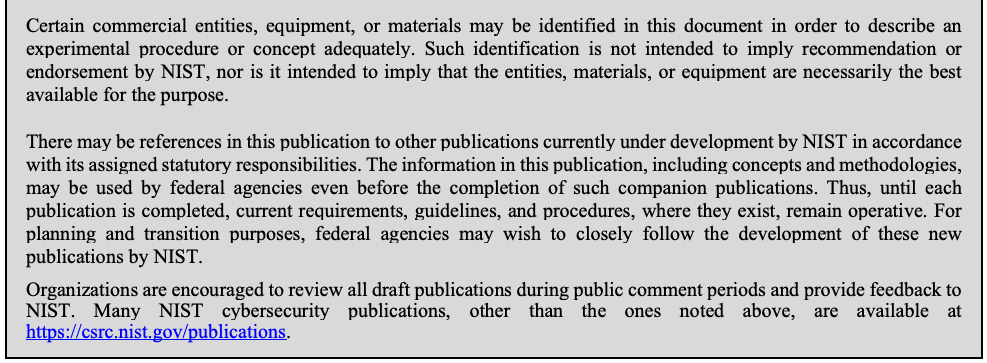
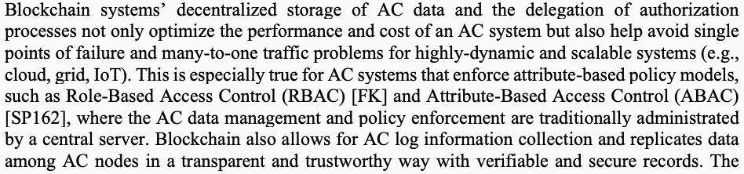
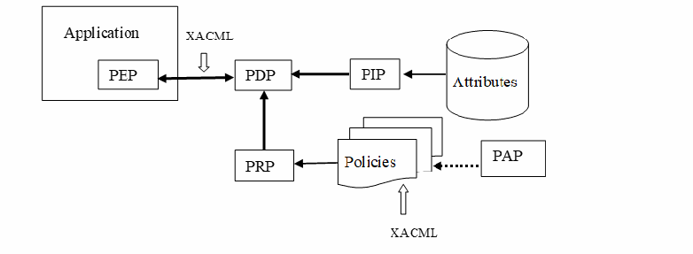

NIST IR 8403 日本語訳
英語タイトル : Blockchain for Access Control Systems日本語タイトル : アクセス制御システムのためのブロックチェーン
公開日 : 2022-05-26
原文URL : https://csrc.nist.gov/pubs/ir/8403/final
翻訳編集 : 自動生成（有志による非公式の日本語訳）, 原文取得日 : 2026-10-31, 訳文 : 186 / 187 ブロック
[要約] NIST IR 8403 は、ブロックチェーンアクセス制御システムについて、ブロックチェーンのシステム特性、構成要素、機能、およびアクセス制御ポリシーモデルへの対応という観点から一般的な情報を示す報告書です。ブロックチェーン技術は、分散化、高い信頼性、耐改ざん性といった特徴を備えており、従来の仕組みによるネットワークアクセス制御にとって課題である、監査可能性、リソース消費、拡張性、中央機関、信頼の問題の解決に有利であるとされています。報告書は、ブロックチェーンシステムの構成要素とアクセス制御システムにおける利点、アクセス制御機能、アクセス制御モデルへの対応を扱います。また、ブロックチェーンアクセス制御システムを実装する際の管理上、セキュリティ上、プライバシー上、性能上、標準化上の考慮事項も取り上げています。
NIST IR 8403
NIST IR 8403
Blockchain for Access Control Systems
アクセス制御システムのためのブロックチェーン
Vincent C. Hu
Vincent C. Hu
This publication is available free of charge from:
本刊行物は、次の場所から無料で入手できます:
https://doi.org/10.6028/NIST.IR.8403
https://doi.org/10.6028/NIST.IR.8403
NIST IR 8403
NIST IR 8403
Blockchain for Access Control Systems
アクセス制御システムのためのブロックチェーン
Vincent C. Hu Computer Security Division Information Technology Laboratory
Vincent C. Hu コンピュータセキュリティ部門 情報技術研究所
This publication is available free of charge from:
本刊行物は、次の場所から無料で入手できます:
https://doi.org/10.6028/NIST.IR.8403
https://doi.org/10.6028/NIST.IR.8403
May 2022
2022年5月
U.S. Department of Commerce Gina M. Raimondo, Secretary
米国商務省 Gina M. Raimondo 長官
National Institute of Standards and Technology
米国国立標準技術研究所（National Institute of Standards and Technology）
Laurie E. Locascio, NIST Director and Under Secretary of Commerce for Standards and Technology
Laurie E. Locascio、NIST 所長兼商務次官（標準・技術担当）
National Institute of Standards and Technology Interagency or Internal Report 8403 28 pages (May 2022)
米国国立標準技術研究所、機関間報告書または内部報告書 8403、全28ページ（2022年5月）
This publication is available free of charge from: https://doi.org/10.6028/NIST.IR.8403
本刊行物は、次の場所から無料で入手できます: https://doi.org/10.6028/NIST.IR.8403
Certain commercial entities, equipment, or materials may be identified in this document in order to describe an experimental procedure or concept adequately. Such identification is not intended to imply recommendation or endorsement by NIST, nor is it intended to imply that the entities, materials, or equipment are necessarily the best available for the purpose.
原本PDFの抜粋画像

本書では、実験手順や概念を適切に説明するために、特定の商業的な事業体、機器、資材に言及している場合があります。そのような言及は、NIST による推奨や推薦を意味するものではなく、それらの事業体、資材、機器がその目的に必ずしも最良であることを意味するものでもありません。
There may be references in this publication to other publications currently under development by NIST in accordance with its assigned statutory responsibilities. The information in this publication, including concepts and methodologies, may be used by federal agencies even before the completion of such companion publications. Thus, until each publication is completed, current requirements, guidelines, and procedures, where they exist, remain operative. For planning and transition purposes, federal agencies may wish to closely follow the development of these new publications by NIST.
本刊行物には、NIST が法令で定められた責務に従って策定中の他の刊行物への言及が含まれている場合があります。概念や方法論を含め、本刊行物の情報は、そうした関連刊行物の完成前であっても、連邦機関が利用する場合があります。したがって、各刊行物が完成するまでは、現行の要件、ガイドライン、手順が存在する場合は、引き続き有効です。計画および移行のため、連邦機関は、NIST によるこれらの新しい刊行物の策定状況を注意深く追うことを検討すべきです。
Organizations are encouraged to review all draft publications during public comment periods and provide feedback to NIST. Many NIST cybersecurity publications, other than the ones noted above, are available at https://csrc.nist.gov/publications.
各組織は、パブリックコメント期間中にすべてのドラフト刊行物を確認し、NIST にフィードバックを提供すべきです。上記以外の NIST のサイバーセキュリティ関連刊行物の多くは、https://csrc.nist.gov/publications で入手できます。
Submit comments on this publication to: ir8403-comments@nist.gov National Institute of Standards and Technology Attn: Computer Security Division, Information Technology Laboratory 100 Bureau Drive (Mail Stop 8930) Gaithersburg, MD 20899-8930
本刊行物へのコメントは、次の宛先に提出してください: ir8403-comments@nist.gov National Institute of Standards and Technology Attn: Computer Security Division, Information Technology Laboratory 100 Bureau Drive (Mail Stop 8930) Gaithersburg, MD 20899-8930
All comments are subject to release under the Freedom of Information Act (FOIA).
すべてのコメントは、情報自由法（FOIA）に基づいて公開される場合があります。
Reports on Computer Systems Technology
コンピュータシステム技術に関する報告書
The Information Technology Laboratory (ITL) at the National Institute of Standards and Technology (NIST) promotes the U.S. economy and public welfare by providing technical leadership for the Nation’s measurement and standards infrastructure. ITL develops tests, test methods, reference data, proof of concept implementations, and technical analyses to advance the development and productive use of information technology. ITL’s responsibilities include the development of management, administrative, technical, and physical standards and guidelines for the cost-effective security and privacy of other than national security-related information in federal information systems.
米国国立標準技術研究所（NIST）の情報技術研究所（ITL）は、国の測定・標準インフラストラクチャに技術的リーダーシップを提供することにより、米国の経済と公共の福祉を促進しています。ITL は、情報技術の発展と生産的な利用を推進するため、テスト、テスト方法、参照データ、概念実証の実装、技術分析を開発しています。ITL の責務には、連邦情報システムにおける国家安全保障関連情報以外の情報について、費用対効果の高いセキュリティおよびプライバシーを確保するための、管理上、運用上、技術上、物理上の標準およびガイドラインの策定が含まれます。
Abstract
概要
The rapid development and wide application of distributed network systems have made network security – especially access control and data privacy – ever more important. Blockchain technology offers features such as decentralization, high confidence, and tamper-resistance, which are advantages to solving auditability, resource consumption, scalability, central authority, and trust issues – all of which are challenges for network access control by traditional mechanisms. This document presents general information for blockchain access control systems from the views of blockchain system properties, components, functions, and supports for access control policy models. Considerations for implementing blockchain access control systems are also included.
分散型ネットワークシステムの急速な発展と広範な適用により、ネットワークセキュリティ、特にアクセス制御とデータプライバシーが、ますます重要になっています。ブロックチェーン技術は、分散化、高い信頼性、耐改ざん性といった特徴を備えており、これらは、従来の仕組みによるネットワークアクセス制御にとって課題である、監査可能性、リソース消費、拡張性、中央機関、信頼の問題の解決に有利です。本書は、ブロックチェーンのシステム特性、構成要素、機能、およびアクセス制御ポリシーモデルへの対応という観点から、ブロックチェーンアクセス制御システムに関する一般的な情報を示します。ブロックチェーンアクセス制御システムを実装する際の考慮事項も含まれています。
Keywords
キーワード
access control; blockchain; authorization; ABAC; policy.
アクセス制御、ブロックチェーン、認可、ABAC、ポリシー。
Acknowledgments
謝辞
The author, Vincent C. Hu of the National Institute of Standards and Technology (NIST), wishes to thank Dylan Yaga, David Ferraiolo, Isabel Van Wyk, Jim Foti (NIST), and Antonios Gouglidis (Lancaster University, UK) who reviewed drafts of this document. The author also gratefully acknowledges and appreciates the comments and contributions made by government agencies, private organizations, and individuals in providing direction and assistance in the development of this document.
著者である米国国立標準技術研究所（NIST）の Vincent C. Hu は、本書のドラフトをレビューしてくださった Dylan Yaga、David Ferraiolo、Isabel Van Wyk、Jim Foti（NIST）、および Antonios Gouglidis（Lancaster University, UK）に感謝します。また、本書の作成にあたり方向性を示し支援してくださった政府機関、民間組織、個人からのコメントと貢献に対し、著者は深く感謝いたします。
Audience
想定読者
This document assumes that readers are access control system experts who also have basic network and blockchain expertise. Because of the constantly changing nature of the information technology (IT) industry, readers are strongly encouraged to take advantage of other resources (including those referred in this document) for more current and detailed information.
本書は、読者がアクセス制御システムの専門家であり、ネットワークとブロックチェーンの基礎的な専門知識も持っていることを前提としています。情報技術（IT）業界は絶えず変化しているため、より新しく詳細な情報を得るために、読者は（本書で参照されている資料を含む）他の資料を活用することを強く推奨します。
Patent Disclosure Notice
特許開示に関する通知
NOTICE: The Information Technology Laboratory (ITL) has requested that holders of patent claims whose use may be required for compliance with the guidance or requirements of this publication disclose such patent claims to ITL. However, holders of patents are not obligated to respond to ITL calls for patents and ITL has not undertaken a patent search in order to identify which, if any, patents may apply to this publication.
通知: 情報技術研究所（ITL）は、本刊行物のガイダンスまたは要件への準拠に使用が必要となる可能性のある特許請求の範囲の保有者に対し、そうした特許請求の範囲を ITL に開示するよう求めています。ただし、特許の保有者は、ITL による特許の募集に応じる義務を負いません。また、ITL は、本刊行物に該当する特許があるとすればどれであるかを特定するための特許調査を行っていません。
Following the ITL call for the identification of patent claims whose use may be required for compliance with the guidance or requirements of this publication, notice of one or more such claims has been received.
本刊行物のガイダンスまたは要件への準拠に使用が必要となる可能性のある特許請求の範囲の特定を求める ITL の募集に対し、そうした請求の一つ以上についての通知を受領しました。
By publication, no position is taken by ITL with respect to the validity or scope of any patent claim or of any rights in connection therewith. The known patent holder(s) has (have), however, provided to NIST a letter of assurance stating either (1) a general disclaimer to the effect that it does (they do) not hold and does (do) not currently intend holding any essential patent claim(s), or (2) that it (they) will negotiate royalty-free or royalty-bearing licenses with other parties on a demonstrably nondiscriminatory basis with reasonable terms and conditions.
本刊行物の発行によって、ITL は、いかなる特許請求の範囲の有効性もしくは範囲、または当該特許請求に関連する権利についても、立場を表明しません。ただし、既知の特許保有者は NIST に保証書を提出しており、その内容は、(1) 必須の特許請求の範囲を保有しておらず、現在も保有する意図がないという一般的な不主張の表明、または (2) 合理的な条件のもとで、実証可能な非差別的基準により、他の当事者と、ロイヤルティ無償またはロイヤルティ有償のライセンスを交渉するというもののいずれかです。
Details may be obtained from ir8403-comments@nist.gov
詳細は ir8403-comments@nist.gov から入手できます。
No representation is made or implied that this is the only license that may be required to avoid patent infringement in the use of this publication.
本刊行物の使用にあたって特許侵害を避けるために必要となるライセンスが、これだけであるという表明は、明示的にも黙示的にも行っていません。
Executive Summary
エグゼクティブサマリー
Access control is concerned with determining the allowed activities of legitimate users and mediating every attempt by a user to access a resource in the system. The objectives of an access control system are often described in terms of protecting system resources against inappropriate or undesired user access. From a business perspective, this objective could just as well be described in terms of the optimal sharing of information. As current information systems and network architectures evolve to be more lightweight, pervasive, and interactive – such as the cloud and Internet of Things (IoT) – there is need for an access control mechanism to support the requirements of decentralization, scalability, and trust for accessing objects, all of which are challenging for traditional mechanisms.
アクセス制御は、正当なユーザーに許可される活動を判断し、ユーザーがシステム内のリソースにアクセスしようとするあらゆる試みを仲介することに関わるものです。アクセス制御システムの目的は、不適切または望ましくないユーザーアクセスからシステムリソースを保護するという観点で説明されることが多くあります。ビジネスの観点からは、この目的は、情報の最適な共有という観点で説明することもできます。現在の情報システムとネットワークアーキテクチャは、クラウドやモノのインターネット（IoT）のように、より軽量で、遍在的で、対話的なものへと進化しています。オブジェクトへのアクセスに関する分散化、拡張性、信頼の要件を支えるアクセス制御の仕組みが必要であり、これらの要件はいずれも従来の仕組みにとって課題です。
Blockchains are tamper-evident and tamper-resistant cryptographically linked blocks of data (which create digital ledgers) implemented in a distributed fashion (i.e., without a central repository) and usually without a central authority (i.e., a bank, company, or government). It uses replicated, shared, and synchronized digital blocks between the users of a private or public distributed computer network located in different sites or organizations. Blockchain can be utilized for access control systems as a trustable alternative for a single entity/organization or a member of a large-scale system to enforce access control policies. The robust, distributed nature of blockchain technology can overcome the limitations of traditional access control systems in a decentralized and efficient way. It is supported by the following infrastructural properties that are not included in traditional access control mechanisms unless specifically implemented:
ブロックチェーンは、改ざんが明らかになり、かつ改ざんに耐性のある、暗号技術で連結されたデータのブロック（デジタル台帳を構成するもの）であり、分散的に（すなわち、中央のリポジトリなしに）、また通常は中央機関（すなわち、銀行、企業、政府）なしに実装されます。ブロックチェーンは、異なる拠点または組織に置かれた、プライベートまたはパブリックな分散コンピュータネットワークのユーザー間で、複製され、共有され、同期されたデジタルブロックを使用します。ブロックチェーンは、単一の主体・組織、または大規模システムの構成員がアクセス制御ポリシーを執行するための、信頼できる代替手段として、アクセス制御システムに利用できます。ブロックチェーン技術の堅牢な分散型の性質により、従来のアクセス制御システムの限界を、分散的かつ効率的な方法で克服できます。ブロックチェーンは、特に実装しない限り従来のアクセス制御の仕組みには含まれない次のインフラストラクチャ上の特性によって支えられています。
•Tamper-evident and tamper-resistant design prevents the alteration of access control data (i.e., attributes, policy rules, environment conditions, and access requests) and access control logs (i.e., request permissions and previous access control data) and reduces the probability of frauds.
•改ざん検知性と耐改ざん性を備えた設計により、アクセス制御データ（すなわち、属性、ポリシー規則、環境条件、アクセス要求）とアクセス制御ログ（すなわち、要求された権限と過去のアクセス制御データ）の改変が防止され、不正が行われる可能性が低減されます。
•The control of authorization processing is decentralized, and the storage of access control data/logs has no single point of failure, thus providing more system tolerance and availability.
•認可処理の制御が分散化されており、アクセス制御データ／ログの保管に単一障害点がないため、システムの耐障害性と可用性が高まります。
•The traceability of blocks allows access control data/logs and system states to be seen and tracked.
•ブロックの追跡可能性により、アクセス制御データ／ログとシステムの状態を確認し、追跡できます。
•The execution of arbitrary programs in smart contracts allows for controls on distributed access control data and authorization processes.
•スマートコントラクトで任意のプログラムを実行できるため、分散されたアクセス制御データと認可プロセスを制御できます。
•Consensus mechanisms and protocols jointly regulate the participating access control entities/organizations in determining policy rules through blocks or smart contracts.
•コンセンサスメカニズムとプロトコルは、ブロックまたはスマートコントラクトを通じてポリシー規則を決定する際に、参加するアクセス制御の主体・組織を共同で統制します。
Table of Contents
目次
List of Figures
図の一覧
List of Tables
表の一覧
1 Introduction
1 はじめに
Access control (AC) is concerned with determining the allowed activities of legitimate users and mediating every attempt by a user to access a resource in the system. The objectives of an AC system are often described in terms of protecting system resources against inappropriate or undesired user access. From a business perspective, this objective could just as well be described in terms of the optimal sharing of information [IR7316]. As current information systems and network architectures evolve to be more lightweight, pervasive, and interactive – such as the cloud and Internet of Things (IoT) – there is need for an AC mechanism to support the requirements of decentralization, scalability, and trust for accessing objects, all of which are challenging for traditional mechanisms.
アクセス制御（AC）は、正当なユーザーに許可される活動を判断し、ユーザーがシステム内のリソースにアクセスしようとするあらゆる試みを仲介することに関わるものです。AC システムの目的は、不適切または望ましくないユーザーアクセスからシステムリソースを保護するという観点で説明されることが多くあります。ビジネスの観点からは、この目的は、情報の最適な共有という観点で説明することもできます [IR7316]。現在の情報システムとネットワークアーキテクチャは、クラウドやモノのインターネット（IoT）のように、より軽量で、遍在的で、対話的なものへと進化しており、オブジェクトにアクセスするための分散化、拡張性、信頼の要件を支える AC の仕組みが必要です。これらはいずれも、従来の仕組みにとって困難なものです。
Blockchains are tamper-evident and tamper-resistant cryptographically linked blocks of data (which create digital ledgers) implemented in a distributed fashion (i.e., without a central repository) and usually without a central authority (i.e., a bank, company, or government). It uses replicated, shared, and synchronized digital blocks between the users of a private or public distributed computer network located in different sites or organizations. A block links to previous blocks by containing a cryptographic hash summary of the previous block’s contents, thus making the blockchain tamper-resistant and tamper-evident (because to change a block, one must then change all subsequent blocks that follow it). A linked list of blocks (i.e., a blockchain) typically has no central control authority and utilizes a decentralized consensus mechanism for reliable data transactions. A smart contract is a transaction protocol that executes the terms of a contract (such as payment term, lien, confidentiality, and even enforcement) on a blockchain via code that is deployed to and executed by blockchain nodes. The main purpose of smart contracts is to satisfy common contractual conditions, as well as minimize exceptions (both malicious and accidental) and the need for trusted intermediaries [IR8202]. Every blockchain node that executes the smart contract should arrive at the same result given the same input.
ブロックチェーンは、改ざんが明らかになり、かつ改ざんに耐性のある、暗号技術で連結されたデータのブロック（デジタル台帳を構成するもの）であり、分散的に（すなわち、中央のリポジトリなしに）、また通常は中央機関（すなわち、銀行、企業、政府）なしに実装されます。ブロックチェーンは、異なる拠点または組織に置かれた、プライベートまたはパブリックな分散コンピュータネットワークのユーザー間で、複製され、共有され、同期されたデジタルブロックを使用します。ブロックは、一つ前のブロックの内容の暗号ハッシュ要約を含むことで、以前のブロックと連結されます。これにより、ブロックチェーンは耐改ざん性と改ざん検知性を備えます（あるブロックを変更するには、それに続くすべてのブロックも変更しなければならないためです）。ブロックの連結リスト（すなわち、ブロックチェーン）には、通常、中央の管理機関がなく、信頼できるデータトランザクションのために分散型のコンセンサスメカニズムを利用します。スマートコントラクトは、契約の条項（支払条件、先取特権、機密保持、さらには履行の強制など）を、ブロックチェーンのノードに配置されて実行されるコードによってブロックチェーン上で実行する、トランザクションプロトコルです。スマートコントラクトの主な目的は、一般的な契約条件を満たすとともに、（悪意によるものと偶発的なものの両方の）例外と、信頼できる仲介者の必要性を最小限に抑えることです [IR8202]。スマートコントラクトを実行するすべてのブロックチェーンノードは、同じ入力が与えられれば同じ結果に到達する必要があります。
Blockchain can be utilized for AC systems as a trustable alternative for a single entity/organization or a member of a large-scale system to enforce AC policies. The robust, distributed nature of blockchain technology can overcome the limitations of traditional AC systems in a decentralized and efficient way. It is supported by the following infrastructural properties that are not included in traditional AC mechanisms unless specifically implemented:
ブロックチェーンは、単一の主体・組織、または大規模システムの構成員が AC ポリシーを執行するための、信頼できる代替手段として、AC システムに利用できます。ブロックチェーン技術の堅牢な分散型の性質により、従来の AC システムの限界を、分散的かつ効率的な方法で克服できます。これは、特に実装しない限り従来の AC の仕組みには含まれない、次のインフラストラクチャ上の特性によって支えられています。
•Tamper-evident and tamper-resistant design prevents the alteration AC data (i.e., attributes, policy rules, environment conditions, and access requests) and AC logs (i.e., request permissions and previous AC data) and reduces the probability of frauds.
•改ざん検知性と耐改ざん性を備えた設計により、AC データ（すなわち、属性、ポリシー規則、環境条件、アクセス要求）と AC ログ（すなわち、要求された権限と過去の AC データ）の改変が防止され、不正が行われる可能性が低減されます。
•The control of authorization processing is decentralized, and the storage of AC data/logs has no single point of failure, thus providing more system tolerance and availability.
•認可処理の制御が分散化されており、AC データ／ログの保管に単一障害点がないため、システムの耐障害性と可用性が高まります。
•The traceability of blocks allows AC data/logs and system states to be seen and tracked.
•ブロックの追跡可能性により、AC データ／ログとシステムの状態を確認し、追跡できます。
•The execution of arbitrary programs in smart contracts allows for controls on distributed AC data and authorization processes.
•スマートコントラクトで任意のプログラムを実行できるため、分散された AC データと認可プロセスを制御できます。
•Consensus mechanisms and protocols jointly regulate the participating AC entities/organizations in determining policy rules through blocks or smart contracts.
•コンセンサスメカニズムとプロトコルは、ブロックまたはスマートコントラクトを通じてポリシー規則を決定する際に、参加する AC の主体・組織を共同で統制します。
Blockchain properties improve the security, flexibility, scalability, integrity, and confidentiality of AC data/logs and processes (compared to traditional AC systems) by allowing organizations to verify and audit AC data transactions and processes to track the states of their AC systems hosted on distributed sites [SP162].
ブロックチェーンの特性は、組織が AC データのトランザクションとプロセスを検証・監査して、分散した拠点でホストされる AC システムの状態を追跡できるようにすることで、AC データ／ログとプロセスのセキュリティ、柔軟性、拡張性、完全性、機密性を（従来の AC システムと比べて）向上させます [SP162]。
This document presents analyses of blockchain AC systems from the perspectives of properties, components, architectures, and model supports, as well as discussions on considerations for implementation. It should not be deemed comprehensive due to the diverse applications of business and mission requirements. Before selecting and deploying a blockchain AC product or technology, the host organization should augment considerations in this document with testing and independent product reviews.
本書は、ブロックチェーン AC システムを、特性、構成要素、アーキテクチャ、モデルへの対応という観点から分析するとともに、実装にあたっての考慮事項を論じます。ビジネス要件やミッション要件は多様であるため、本書を網羅的なものとみなすべきではありません。ブロックチェーン AC 製品または技術を選定して配備する前に、導入する組織は、本書の考慮事項に加えて、テストと独立した製品レビューを実施すべきです。
This document is organized as follows:
本書の構成は次のとおりです。
•Section 1 is the Introduction.
•第 1 章は、はじめにです。
•Section 2 describes blockchain system components and their advantages over traditional AC systems.
•第 2 章は、ブロックチェーンシステムの構成要素と、従来の AC システムに対するそれらの利点を説明します。
•Section 3 illustrates the architecture of basic AC functions for blockchain systems.
•第 3 章は、ブロックチェーンシステムにおける基本的な AC 機能のアーキテクチャを図示します。
•Section 4 demonstrates blockchain AC system supports for AC policy models.
•第 4 章は、ブロックチェーン AC システムによる AC ポリシーモデルへの対応を示します。
•Section 5 discusses considerations for the implementation of blockchain AC systems.
•第 5 章は、ブロックチェーン AC システムの実装にあたっての考慮事項を論じます。
•Section 6 is the Conclusion.
•第 6 章は、結論です。
2 ブロックチェーンシステムの構成要素とアクセス制御システムにおける利点
Blockchain systems provide an alternative (or complimentary) system for reliability, security, accountability, and scalability for AC systems. Blockchain characteristics – such as transparency, distributed computing/storage, and a tamper-evident/tamper-resistant design – help to prevent AC data from being accessed or modified by malicious users. Access logs are also recorded in blocks that allow for the detection of malicious activities. Blockchain system components and their advantages for AC systems are:
ブロックチェーンシステムは、AC システムの信頼性、セキュリティ、説明責任、拡張性を実現するための、代替の（または補完的な）システムとなります。透明性、分散コンピューティング／ストレージ、耐改ざん性・改ざん検知性を備えた設計といったブロックチェーンの特徴は、悪意のあるユーザーによる AC データへのアクセスや改変の防止に役立ちます。アクセスログもブロックに記録されるため、悪意のある活動を検知できます。ブロックチェーンシステムの構成要素と、AC システムにおけるそれらの利点は次のとおりです。
•A node is an individual computer system within a blockchain network. It can act as an AC system’s entity or organization and is called an AC node within the AC network. AC nodes including lightweight nodes (i.e., a node that does not store or maintain a copy of the blockchain), full nodes (i.e., a node that stores the entire blockchain and ensures that transactions are valid), and publishing nodes (i.e., a full node that also publishes new blocks). Lightweight nodes must pass their transactions to full nodes. Depending on the design of the AC system, AC nodes can act as host servers for AC data (e.g., subject/object attributes, environment conditions, and policy rules) or as administrators for AC policy management and enforcement.
•ノードはブロックチェーンネットワーク内の個々のコンピュータシステムです。ノードは AC システムの主体または組織として機能することができ、AC ネットワーク内では AC ノードと呼ばれます。AC ノードには、ライトノード（ブロックチェーンの複製を保管も維持もしないノード）、フルノード（ブロックチェーン全体を保管し、トランザクションが有効であることを確認するノード）、および公開ノード（新しいブロックも公開するフルノード）があります。ライトノードは、自身のトランザクションをフルノードに渡さなければなりません。AC システムの設計に応じて、AC ノードは AC データ（たとえば、サブジェクト／オブジェクトの属性、環境条件、ポリシー規則）のホストサーバー、または AC ポリシーの管理と執行を担う管理者として機能できます。
•A block contains trustable and tamper-resistant AC data as well as a history of access logs without third parties or centralized management. Distributed blocks solve the single point of failure problem and provide information for distributed architectures, which often involve a much larger set of AC entities or organization. Distributed ownership of blocks is necessary because of possible trust, security, and reliability concerns that are associated with the centralized management of AC enforcement or AC data ownership [IR8202].
•ブロックは、第三者や集中管理なしに、信頼でき、かつ改ざん耐性のある AC データとアクセスログの履歴を保持します。分散されたブロックは単一障害点の問題を解決し、はるかに多数の AC エンティティまたは組織が関与することの多い分散型アーキテクチャに情報をもたらします。AC の執行や AC データの所有権を集中管理することには、信頼、セキュリティ、信頼性に関する懸念が伴う可能性があるため、ブロックの所有権を分散させることが必要です [IR8202]。
•Full blockchain nodes are not only a repository of AC data and logs of blocks but can also store objects. Even though blockchain contents are tamper-evident and tamper-resistant, [Kuhn] proposed a data structure with similar features to a blockchain – the data block matrix data structure – that allows for the deletion of arbitrary records and preserves hash-based integrity assurance that other blocks are unchanged. Such a feature may be incorporated into AC systems that require integrity and privacy protection such that organizations or users are able to delete all information related to a particular access request.
•ブロックチェーンのフルノードは、AC データとブロックのログのリポジトリであるだけでなく、オブジェクトを保管することもできます。ブロックチェーンの内容は改ざんが明らかになり、かつ改ざんに耐性がありますが、[Kuhn] は、ブロックチェーンに似た特徴を持つデータ構造、すなわちデータブロックマトリクスデータ構造を提案しました。このデータ構造では、任意のレコードを削除でき、かつ他のブロックが変更されていないというハッシュに基づく完全性の保証を維持できます。こうした特徴は、完全性とプライバシーの保護を必要とする AC システムに取り入れることができ、組織やユーザーは、特定のアクセス要求に関連するすべての情報を削除できるようになります。
•A consensus mechanism ensures that only valid transactions are recorded on the blockchain. Different kinds of consensus mechanisms can be used for AC systems, including proof of work (PoW), proof of stake (PoS), and single committee-based [LQLL]. For mandatory AC (MAC) policies, the integrity and consistency of AC administrations are maintained by consensus mechanisms configured for permissioned blockchains. Consensus mechanisms configured for permissionless blockchains are crucial for discretional AC (DAC) policies due to the dynamic management requirement for scalability and decentralization of the system.
•コンセンサスメカニズムは、有効なトランザクションだけがブロックチェーンに記録されるようにします。AC システムには、プルーフ・オブ・ワーク（PoW）、プルーフ・オブ・ステーク（PoS）、単一委員会ベースなど、さまざまな種類のコンセンサスメカニズムを使用できます [LQLL]。強制アクセス制御（MAC）ポリシーでは、AC 管理の完全性と一貫性は、許可型ブロックチェーン向けに構成されたコンセンサスメカニズムによって維持されます。非許可型ブロックチェーン向けに構成されたコンセンサスメカニズムは、システムの拡張性と分散化のために動的な管理が求められることから、任意アクセス制御（DAC）ポリシーにとって極めて重要です。
•A smart contract is an event-driven computer program distributed to and executed by AC nodes to facilitate and enforce AC processes (i.e., authorization processes and AC data transitions) between them without going through a trusted third party. A smart contract can perform calculations, store data in storage spaces, expose environment conditions to reflect the current system state via callable functions, and – if appropriate – automatically send data or function calls to other smart contracts [IR8202]. Adding a smart contract to a block means executing code and updating the AC state (i.e., previous access permissions, environment conditions, and system status) accordingly [DMMR]. The smart contract code is also tamper-evident and tamper-resistant. It is copied to each AC node to reduce human error and avoid disputation, thus providing a secure way to specify AC policies and transform the authorization process into a distributed execution [KLG]. Such a capability works especially well for a system that requires each distributed AC entity to perform local authorization so that the authorization chain can be verified in a decentralized manner.
•スマートコントラクトは、AC ノードに配布されて実行されるイベント駆動型のコンピュータプログラムであり、信頼できる第三者を介さずに、AC ノード間の AC プロセス（すなわち、認可プロセスと AC データの遷移）を円滑にし、執行します。スマートコントラクトは、計算を実行し、ストレージ領域にデータを保存し、呼び出し可能な関数を通じて現在のシステム状態を反映する環境条件を公開し、適切な場合には、他のスマートコントラクトにデータや関数呼び出しを自動的に送ることができます [IR8202]。ブロックにスマートコントラクトを追加することは、コードを実行し、それに応じて AC 状態（すなわち、過去のアクセス権限、環境条件、システムの状況）を更新することを意味します [DMMR]。スマートコントラクトのコードも、改ざんが明らかになり、かつ改ざんに耐性があります。コードは各 AC ノードに複製されるため、人為的ミスが減り、紛争が避けられます。これにより、AC ポリシーを指定し、認可プロセスを分散実行へと変換する安全な方法が得られます [KLG]。この機能は、分散した各 AC の主体にローカルで認可を実行させ、認可の連鎖を分散的に検証できるようにする必要があるシステムで、特に有効に機能します。
Blockchain systems’ decentralized storage of AC data and the delegation of authorization processes not only optimize the performance and cost of an AC system but also help avoid single points of failure and many-to-one traffic problems for highly-dynamic and scalable systems (e.g., cloud, grid, IoT). This is especially true for AC systems that enforce attribute-based policy models, such as Role-Based Access Control (RBAC) [FK] and Attribute-Based Access Control (ABAC) [SP162], where the AC data management and policy enforcement are traditionally administrated by a central server. Blockchain also allows for AC log information collection and replicates data among AC nodes in a transparent and trustworthy way with verifiable and secure records. The following blockchain capabilities are not generally supported by traditional, centrally controlled AC mechanisms:
原本PDFの抜粋画像

ブロックチェーンシステムは、AC データを分散して保管し、認可プロセスを委譲することで、AC システムの性能とコストを最適化するだけでなく、動的で拡張性の高いシステム（たとえば、クラウド、グリッド、IoT）における単一障害点や多対一のトラフィックの問題を回避するのにも役立ちます。これは、ロールベースアクセス制御（RBAC）[FK] や属性ベースアクセス制御（ABAC）[SP162] のように、属性に基づくポリシーモデルを執行する AC システムで特に当てはまります。これらのモデルでは、従来、AC データの管理とポリシーの執行を中央サーバーが管理しています。ブロックチェーンはまた、AC ログ情報の収集と、AC ノード間でのデータの複製を、検証可能で安全な記録を伴う、透明で信頼できる方法で行えるようにします。従来の、中央で制御される AC の仕組みでは、通常、次のブロックチェーンの機能はサポートされていません。
•Removes control from a centralized system and provides flexibility in AC data management and AC processes, such as workflow control or localization control, and thus avoids possible leakages or faults of access privileges by excessive powers of centralized server [LOLL]
•集中型システムから制御を取り除き、ワークフロー制御やローカライズ制御など、AC データの管理と AC プロセスに柔軟性をもたらします。これにより、中央サーバーが過大な権限を持つことによってアクセス権限の漏えいや誤りが生じる可能性を回避します [LOLL]
•Increases performance for managing a large number of subjects and objects, such as IoT AC systems, where each IoT device is an AC node of an AC entity or organization
•各 IoT デバイスが AC の主体・組織の AC ノードとなる IoT AC システムなど、多数のサブジェクトとオブジェクトを管理する際の性能を向上させる
•Allows for the enforcement of flexible, fine-grained, and responsive policy by transferring or propagating access privileges from one AC node to others through smart contract functions
•スマートコントラクトの関数を通じて、ある AC ノードから他のノードへアクセス権限を移譲または伝播させることで、柔軟で、きめ細かく、応答性の高いポリシーの執行を可能にする
•Supports communication between subjects, AC administrators, and protocols for the administration of heterogeneous AC policies and security analysis
•サブジェクト、AC 管理者、および異種の AC ポリシーの管理とセキュリティ分析のためのプロトコル間の通信をサポートします
•Avoids tampering and single points of failure (e.g., caused by network attacks like distributed denial-of-service (DDoS)) to increase integrity, availability, and traceability [GBHC] through recording, distributing, and storing AC data and log information in the blockchain. However, as all subjects can see all entries in the blockchain, privacy can be an issue for this capability.
•AC データとログ情報をブロックチェーンに記録、配布、保管することで、改ざんや単一障害点（たとえば、分散型サービス妨害（DDoS）などのネットワーク攻撃によるもの）を回避し、完全性、可用性、追跡可能性を高めます [GBHC]。ただし、すべてのサブジェクトがブロックチェーン内のすべてのエントリを閲覧できるため、この機能ではプライバシーが問題になる場合があります。
•Dispenses heavy and complex authorization or management tasks between AC nodes to enhance performance and scalability, as well as decrease the cost and responsibility of administration traditionally assigned to central or third-party services
•負荷が大きく複雑な認可タスクや管理タスクを AC ノード間に分散して、性能と拡張性を高めるとともに、従来は中央または第三者のサービスに割り当てられていた管理のコストと責任を軽減する
3 Access Control Functions of Blockchain AC Systems
3 ブロックチェーンアクセス制御システムのアクセス制御機能
This section examines an integration of access control functional components and a blockchain framework in support of ABAC. Extensible Access Control Markup Language (XACML) [XACML] and Next Generation Access Control (NGAC) [INCITS] are two ABAC standards that could serve as a basis for this discussion. See [SP162] for a detailed comparison. Both standards encompass four layers of functional decomposition: enforcement, decision, administration, and access control data. Unfortunately, XACML and NGAC achieve this decomposition by involving components with often similar names but apply different access control data types, provide different interfaces, and result in different functional outcomes. To avoid confusion, the remainder of this section applies XACML’s reference architecture as an example ABAC integration use case.
本章では、ABAC を支えるための、アクセス制御の機能コンポーネントとブロックチェーンフレームワークの統合について検討します。Extensible Access Control Markup Language（XACML）[XACML] と Next Generation Access Control（NGAC）[INCITS] は、この議論の基礎となりうる二つの ABAC 標準です。詳細な比較については [SP162] を参照してください。どちらの標準も、執行、決定、管理、アクセス制御データという 4 層の機能分解を含んでいます。残念ながら、XACML と NGAC は、名称がよく似たコンポーネントを用いてこの分解を実現しているものの、適用するアクセス制御データの種類、提供するインタフェース、得られる機能上の成果が異なります。混乱を避けるため、本章の以降では、ABAC 統合のユースケースの例として、XACML のリファレンスアーキテクチャを適用します。
The Organization for the Advancement of Structured Information Standards (OASIS) standard XACML proposes basic processing entities for AC systems. Each entity handles a different stage of processing a user’s access request, as shown in Figure 1. These functional components may be physically and logically separated and distributed rather than centralized, such as several functional “points” that are the service node for the retrieval and management of the policy, along with some logical components for handling the context or workflow of AC data retrieval and assessment.
Organization for the Advancement of Structured Information Standards（OASIS）の標準である XACML は、AC システムの基本的な処理主体を提案しています。図 1 に示すように、各主体は、ユーザーのアクセス要求を処理する段階のうち、それぞれ異なる段階を担当します。これらの機能コンポーネントは、集中化されるのではなく、物理的にも論理的にも分離され、分散されている場合があります。たとえば、ポリシーの取得と管理を行うサービスノードとなるいくつかの機能上の「ポイント」と、AC データの取得と評価のコンテキストやワークフローを扱ういくつかの論理コンポーネントなどです。

XACML のアーキテクチャを示す図です。「Application」の枠の中に「PEP」があります。PEP と「PDP」は双方向の矢印で結ばれ、その接続に「XACML」と書かれた矢印が上から向かっています。「PIP」から PDP へ、円柱の「Attributes」から PIP へ矢印があります。「PRP」から PDP へ上向きの矢印があり、重なった文書「Policies」から PRP へ矢印があります。「PAP」から Policies へ点線の矢印があり、「XACML」と書かれた矢印が下から Policies に向かっています。
Figure 1 – XACML Architecture
図 1 – XACML アーキテクチャ
In a blockchain AC system, these function points can be performed by an individual or combination of blockchain system components. The following describes the five basic XACML function points and their implementations by blockchain AC components.
ブロックチェーン AC システムでは、これらの機能ポイントは、ブロックチェーンシステムの構成要素の単独または組合せによって実行できます。以下では、XACML の五つの基本的な機能ポイントと、ブロックチェーン AC の構成要素によるそれらの実装を説明します。
1.Policy Administration Point (PAP): Provides a user interface for creating, testing, and debugging policies, as well as storing these policies in the appropriate repository. PAP can be created and maintained by AC nodes or smart contracts that are coded to access AC policies, depending on where the source of the AC data is maintained.
1.ポリシー管理ポイント（PAP）: ポリシーの作成、テスト、デバッグを行うためのユーザーインタフェースを提供するとともに、これらのポリシーを適切なリポジトリに保管します。PAP は、AC データの供給元がどこで維持されているかに応じて、AC ノード、または AC ポリシーにアクセスするようコーディングされたスマートコントラクトによって、作成・維持できます。
2.Policy Information Point (PIP): Serves as the source of subject/object attributes or environment condition data required for policy evaluation to provide the information needed by the PDP to make the authorization decisions. PIP can be performed in AC nodes, coded in smart contracts that are coded to access AC data, or hosted in an off-chain processor, depending on where the source of the AC data is maintained.
2.ポリシー情報ポイント（PIP）: ポリシーの評価に必要なサブジェクト／オブジェクトの属性や環境条件データの供給元となり、PDP が認可の決定を下すために必要な情報を提供します。PIP は、AC データの供給元がどこにあるかに応じて、AC ノードで実行するか、AC データにアクセスするようコーディングされたスマートコントラクトに実装するか、オフチェーンのプロセッサでホストできます。
3.Policy Retrieval Point (PRP): Where the policies are stored and fetched by the PDP. As PIP depends on where the source of AC data is maintained, the PRP can be implemented in AC nodes, coded in smart contracts, or hosted in an off-chain system, depending on where the source of the policy rules is maintained [IR7874].
3.ポリシー取得ポイント（PRP）: ポリシーが保管され、PDP によって取得される場所です。PIP が AC データの供給元の所在に依存するのと同様に、PRP はポリシー規則の供給元の所在に応じて、AC ノードに実装するか、スマートコントラクトにコーディングするか、オフチェーンシステムでホストできます [IR7874]。
4.Policy Decision Point (PDP): Computes access decisions by evaluating the applicable policies based on information provided by PIP and PRP. One of the main functions of the PDP is to mediate or deconflict policy rules. PDP can be coded in a smart contract, coded into distributed executions, or performed by AC nodes.
4.ポリシー決定ポイント（PDP）: PIP と PRP から提供される情報に基づいて、適用されるポリシーを評価し、アクセスの決定を計算します。PDP の主な機能の一つは、ポリシー規則を調停し、競合を解消することです。PDP は、スマートコントラクトにコーディングするか、分散実行にコーディングするか、AC ノードで実行できます。
5.Policy Enforcement Point (PEP): Makes decision requests and enforces authorization decisions made by the PDP. PEP can be performed by AC nodes that contain objects, by smart contracts that are coded to access objects, or by an off-chain processor.
5.ポリシー執行ポイント（PEP）: 決定要求を行い、PDP が下した認可の決定を執行します。PEP は、オブジェクトを保持する AC ノード、オブジェクトにアクセスするようコーディングされたスマートコントラクト、またはオフチェーンのプロセッサによって実行できます。
The basic AC function points can be processed through the uploading and updating of AC data to execute AC processes, smart contract functions, or even off-chain processes, depending on security/performance requirements and the resource availability of the AC system. Figures 2, 3, 4, and 5 illustrate examples of different assignments of function points in blockchain AC systems. Each function point in a picture is labeled (in blue) alongside the performing blockchain component.
基本的な AC 機能ポイントは、AC システムのセキュリティ／性能要件とリソースの利用可能性に応じて、AC データのアップロードと更新を通じて処理できます。また、AC プロセス、スマートコントラクトの関数、さらにはオフチェーンプロセスを通じて処理することもできます。図 2、3、4、5 は、ブロックチェーン AC システムにおける機能ポイントのさまざまな割り当て例を示します。図中では、各機能ポイントの横に、その機能を実行するブロックチェーン構成要素が（青色で）ラベル付けされています。
![Diagram of access control function points in a blockchain system (example 1). Two “block” scrolls are linked by dashed lines inside a dashed ellipse labeled “Blockchain”. Below, “AC managers or object owners” (a person icon) send to a “Publishing or full node” computer, which is connected by a dashed line to a second “Publishing or full node”; both send “Policy rules” up to the blockchain. A curved dashed two-way arrow labeled “Consensus mechanisms” runs along the bottom between the nodes on the left and the right. Each block contains a “Policy” document. “PAP” (in blue) is on the dashed line between the two publishing nodes. On the right, a “lightweight node” computer receives “Policy rules” from the blockchain, exchanges data with a cylinder “objects”, and is connected with a two-way arrow to a person icon “subject”; it is labeled in blue “PIP PRP PEP PDP”.](assets/ir-8403/p0014-figure-01.png)
ブロックチェーンシステムに実装したアクセス制御の機能ポイントの例（例1）を示す図です。破線の楕円「Blockchain」の中に、2つの「block」が破線でつながっています。下段では、人のアイコン「AC managers or object owners」から「Publishing or full node」のコンピュータへ矢印があり、それが破線で2つ目の「Publishing or full node」につながり、どちらもブロックチェーンへ「Policy rules」を送っています。下部には「Consensus mechanisms」と書かれた破線の曲がった双方向矢印が、左右のノードの間にあります。各 block には「Policy」の文書があります。2つの公開ノードの間の破線に青字で「PAP」とあります。右側では「lightweight node」のコンピュータがブロックチェーンから「Policy rules」を受け取り、円柱の「objects」とデータをやり取りし、人のアイコン「subject」と双方向の矢印で結ばれています。このノードには青字で「PIP PRP PEP PDP」とあります。
Figure 2 – Example 1 of access control function points implemented in a blockchain system
図 2 – ブロックチェーンシステムに実装されたアクセス制御機能ポイントの例 1
![Diagram of access control function points in a blockchain system (example 2). Two “block” scrolls are linked by dashed lines inside a dashed ellipse labeled “Blockchain”. Below, “AC managers or object owners” (a person icon) send to a “Publishing or full node” computer, which is connected by a dashed line to a second “Publishing or full node”; both send “Policy rules” up to the blockchain. A curved dashed two-way arrow labeled “Consensus mechanisms” runs along the bottom between the nodes on the left and the right. Each “Block” contains a “Smart Contract” holding a “Policy” document; the right block is labeled in blue “PAP” and “PIP”. On the right, a “lightweight node” computer is connected to the blockchain, exchanges data with a cylinder “objects”, and is connected with a two-way arrow to a person icon “subject”; it is labeled in blue “PRP PEP PDP”.](assets/ir-8403/p0015-figure-01.png)
ブロックチェーンシステムに実装したアクセス制御の機能ポイントの例（例2）を示す図です。破線の楕円「Blockchain」の中に、2つの「block」が破線でつながっています。下段では、人のアイコン「AC managers or object owners」から「Publishing or full node」のコンピュータへ矢印があり、それが破線で2つ目の「Publishing or full node」につながり、どちらもブロックチェーンへ「Policy rules」を送っています。下部には「Consensus mechanisms」と書かれた破線の曲がった双方向矢印が、左右のノードの間にあります。各「Block」には「Policy」の文書を含む「Smart Contract」があり、右の Block には青字で「PAP」「PIP」とあります。右側では「lightweight node」のコンピュータがブロックチェーンとつながり、円柱の「objects」とデータをやり取りし、人のアイコン「subject」と双方向の矢印で結ばれています。このノードには青字で「PRP PEP PDP」とあります。
Figure 3 – Example 2 of access control function points implemented in a blockchain system
図 3 – ブロックチェーンシステムに実装されたアクセス制御機能ポイントの例 2
![Diagram of access control function points in a blockchain system (example 3). Two “block” scrolls are linked by dashed lines inside a dashed ellipse labeled “Blockchain”. Below, “AC managers or object owners” (a person icon) send to a “Publishing or full node” computer, which is connected by a dashed line to a second “Publishing or full node”; both send “Policy rules” up to the blockchain. A curved dashed two-way arrow labeled “Consensus mechanisms” runs along the bottom between the nodes on the left and the right. Each “Block” contains a “Smart Contract”; the right one is labeled in blue “PAP”. On the right, a “lightweight node” computer receives “Policy rules” from the blockchain, exchanges data with a “Policy” document and a cylinder “objects”, and is connected with a two-way arrow to a person icon “subject”; it is labeled in blue “PEP PIP PDP PRP”.](assets/ir-8403/p0015-figure-02.png)
ブロックチェーンシステムに実装したアクセス制御の機能ポイントの例（例3）を示す図です。破線の楕円「Blockchain」の中に、2つの「block」が破線でつながっています。下段では、人のアイコン「AC managers or object owners」から「Publishing or full node」のコンピュータへ矢印があり、それが破線で2つ目の「Publishing or full node」につながり、どちらもブロックチェーンへ「Policy rules」を送っています。下部には「Consensus mechanisms」と書かれた破線の曲がった双方向矢印が、左右のノードの間にあります。各「Block」には「Smart Contract」があり、右の Smart Contract には青字で「PAP」とあります。右側では「lightweight node」のコンピュータがブロックチェーンから「Policy rules」を受け取り、「Policy」の文書と円柱の「objects」とデータをやり取りし、人のアイコン「subject」と双方向の矢印で結ばれています。このノードには青字で「PEP PIP PDP PRP」とあります。
Figure 4 – Example 3 of access control function points implemented in a blockchain system
図 4 – ブロックチェーンシステムに実装されたアクセス制御機能ポイントの例 3
![Diagram of access control function points in blockchain systems (example 4). Two “block” scrolls are linked by dashed lines inside a dashed ellipse labeled “Blockchain”. Below, “AC managers or object owners” (a person icon) send to a “Publishing or full node” computer, which is connected by a dashed line to a second “Publishing or full node”; both send “Policy rules” up to the blockchain. A curved dashed two-way arrow labeled “Consensus mechanisms” runs along the bottom between the nodes on the left and the right. Each “Block” contains a “Smart Contract” with a “Policy” document and a cylinder “objects”; the right block is labeled in blue “PIP PEP PRP PDP”. “PAP” (in blue) is on the dashed line between the two publishing nodes. On the right, a person icon labeled “lightweight node subject” is connected to the blockchain with a two-way arrow.](assets/ir-8403/p0016-figure-01.png)
ブロックチェーンシステムに実装したアクセス制御の機能ポイントの例（例4）を示す図です。破線の楕円「Blockchain」の中に、2つの「block」が破線でつながっています。下段では、人のアイコン「AC managers or object owners」から「Publishing or full node」のコンピュータへ矢印があり、それが破線で2つ目の「Publishing or full node」につながり、どちらもブロックチェーンへ「Policy rules」を送っています。下部には「Consensus mechanisms」と書かれた破線の曲がった双方向矢印が、左右のノードの間にあります。各「Block」には、「Policy」の文書と円柱の「objects」を含む「Smart Contract」があり、右の Block には青字で「PIP PEP PRP PDP」とあります。2つの公開ノードの間の破線に青字で「PAP」とあります。右側では「lightweight node subject」と書かれた人のアイコンが、ブロックチェーンと双方向の矢印で結ばれています。
Figure 5 – Example 4 of access control function points implemented in blockchain systems
図 5 – ブロックチェーンシステムに実装されたアクセス制御機能ポイントの例 4
A centralized management AC system, as shown in Figure 2, requires the blockchain to play the role of a trusted storage of AC data such that most function points are hosted in a lightweight node connected to the blockchain to obtain the AC data and current system states. However, it still inherits the shortcomings of centralization, such as the problem of a single point of failure. In contrast, Figure 5 shows how the AC system requires decentralized management and adopts blockchain as a trusted platform to maximize system availability and minimize the possibility of AC data forgery and tampering. All function points, except for PAP, are implemented in the blockchain (with smart contracts) that also stores AC data. For this implementation, AC policy administrators use a publishing node for policy management, and subjects use lightweight nodes for access requests that will be processed by smart contracts, thereby ensuring that it can be processed promptly. For conciseness, the examples in Figures 2 through 5 address both the subject and object attributes associated with the policies (i.e., stored and managed by the same authority). Otherwise, they can be separately administrated by PIP and PRP either in or out of the chain hosts, as shown in Figure 6 – an example of options for a federated AC system.
図 2 に示す集中管理型の AC システムでは、ブロックチェーンが AC データの信頼できるストレージの役割を担う必要があり、ほとんどの機能ポイントは、AC データと現在のシステム状態を取得するためにブロックチェーンに接続されたライトノードにホストされます。しかし、このシステムは、単一障害点の問題など、集中化の欠点を依然として受け継いでいます。これに対し、図 5 は、AC システムに分散型の管理が求められる場合に、システムの可用性を最大化し、AC データの偽造や改ざんの可能性を最小化するために、ブロックチェーンを信頼できるプラットフォームとして採用する方法を示しています。PAP を除くすべての機能ポイントは、AC データも保管するブロックチェーン内に（スマートコントラクトを用いて）実装されます。この実装では、AC ポリシー管理者はポリシー管理に公開ノードを使用し、サブジェクトはアクセス要求にライトノードを使用します。アクセス要求はスマートコントラクトによって処理されるため、速やかに処理できます。簡潔にするため、図 2 から図 5 の例では、ポリシーに関連付けられたサブジェクトとオブジェクトの両方の属性を扱っています（すなわち、同じ機関によって保管・管理されます）。そうでない場合、これらの属性は、フェデレーテッド AC システムの選択肢の例である図 6 に示すように、チェーンのホストの内外いずれかにある PIP と PRP によって、別々に管理できます。
![Diagram in which the attribute source is outside the chain. Two “block” scrolls are linked by dashed lines inside a dashed ellipse labeled “Blockchain”. Below, “AC managers or object owners” (a person icon) send to a “Publishing or full node” computer, which is connected by a dashed line to a second “Publishing or full node”; both send “Policy rules” up to the blockchain. A curved dashed two-way arrow labeled “Consensus mechanisms” runs along the bottom between the nodes on the left and the right. Each “Block” contains a “Smart Contract” with a “Policy” document and a cylinder “objects”; the right block is labeled in blue “PRP PEP PDP PIP”. “PAP” (in blue) is on the dashed line between the two publishing nodes. Outside the blockchain, a cylinder “attributes” is connected to the blockchain with a two-way arrow, and a person icon labeled “lightweight node subject” is also connected to the blockchain with a two-way arrow.](assets/ir-8403/p0017-figure-01.png)
属性の情報源がチェーンの外にある構成を示す図です。破線の楕円「Blockchain」の中に、2つの「block」が破線でつながっています。下段では、人のアイコン「AC managers or object owners」から「Publishing or full node」のコンピュータへ矢印があり、それが破線で2つ目の「Publishing or full node」につながり、どちらもブロックチェーンへ「Policy rules」を送っています。下部には「Consensus mechanisms」と書かれた破線の曲がった双方向矢印が、左右のノードの間にあります。各「Block」には、「Policy」の文書と円柱の「objects」を含む「Smart Contract」があり、右の Block には青字で「PRP PEP PDP PIP」とあります。2つの公開ノードの間の破線に青字で「PAP」とあります。ブロックチェーンの外にある円柱の「attributes」がブロックチェーンと双方向の矢印で結ばれ、「lightweight node subject」と書かれた人のアイコンもブロックチェーンと双方向の矢印で結ばれています。
Figure 6 – Attribute source is out of the chain
図 6 – 属性の供給元がチェーンの外部にある場合
![Diagram of an attribute source option. Two “block” scrolls are linked by dashed lines inside a dashed ellipse labeled “Blockchain”. Below, “AC managers or object owners” (a person icon) send to a “Publishing or full node” computer, which is connected by a dashed line to a second “Publishing or full node”; both send “Policy rules” up to the blockchain. A curved dashed two-way arrow labeled “Consensus mechanisms” runs along the bottom between the nodes on the left and the right. Each “Block” contains a “Smart Contract” with a “Policy” document and cylinders “objects” and “attributes”; the right block is labeled in blue “PRP PEP PDP PIP”. “PAP” (in blue) is on the dashed line between the two publishing nodes. On the right, a person icon labeled “lightweight node subject” is connected to the blockchain with a two-way arrow.](assets/ir-8403/p0017-figure-02.png)
属性の情報源の選択肢の例を示す図です。破線の楕円「Blockchain」の中に、2つの「block」が破線でつながっています。下段では、人のアイコン「AC managers or object owners」から「Publishing or full node」のコンピュータへ矢印があり、それが破線で2つ目の「Publishing or full node」につながり、どちらもブロックチェーンへ「Policy rules」を送っています。下部には「Consensus mechanisms」と書かれた破線の曲がった双方向矢印が、左右のノードの間にあります。各「Block」には、「Policy」の文書と円柱の「objects」「attributes」を含む「Smart Contract」があり、右の Block には青字で「PRP PEP PDP PIP」とあります。2つの公開ノードの間の破線に青字で「PAP」とあります。右側では「lightweight node subject」と書かれた人のアイコンがブロックチェーンと双方向の矢印で結ばれています。
Figure 7 – Examples of Figure 2d with attribute source options
図 7 – 属性の供給元の選択肢を加えた図 2d の例
Architectures for blockchain AC systems offer flexibility based on the AC policy models enforced, such as separate blockchain networks for the separation of duty (SoD) policy model or external expansion of the AC system, which connects off-chain oracles for accessing AC data provided by third parties. Note that the architecture of a blockchain AC system is independent from the AC policy models (e.g., ABAC, RBAC, Capability Bases AC (CBAC) [GPR]) that the AC system intends to apply. For example, if a CBAC model is applied, then the policy rules in Figure 2 should be replaced by access tokens.
ブロックチェーン AC システムのアーキテクチャは、執行する AC ポリシーモデルに応じて柔軟に構成できます。たとえば、職務分離（SoD）ポリシーモデルのために別々のブロックチェーンネットワークを用いたり、第三者が提供する AC データにアクセスするオフチェーンのオラクルに接続して AC システムを外部に拡張したりできます。ブロックチェーン AC システムのアーキテクチャは、その AC システムが適用しようとする AC ポリシーモデル（たとえば、ABAC、RBAC、ケイパビリティベース AC（CBAC）[GPR]）とは独立していることに注意してください。たとえば、CBAC モデルを適用する場合は、図 2 のポリシー規則をアクセストークンに置き換えるべきです。
To ensure AC data security, functions to satisfy the following three security requirements may also need to be included [SP205]:
AC データのセキュリティを確保するために、次の三つのセキュリティ要件を満たす機能も含める必要がある場合があります [SP205]。
1.The semantic and syntactic correctness (i.e., veracity of AC data) needs to be ensured or trusted. If such data are from out-of-the-chain sources, an authority for oracle needs to be applied to validate and oversee the correctness of the data. However, if it is provided by different AC nodes, then multiple authorities working in coordination can take part in validating different sources or functions embedded in the smart contracts that need to be developed for the tasks [GMS].
1.意味上および構文上の正しさ（すなわち、AC データの真正性）を確保するか、信頼できるものとする必要があります。そのようなデータがチェーン外の供給元から得られる場合は、データの正しさを検証し監督するため、オラクルを管理する機関が必要です。一方、データが異なる AC ノードによって提供される場合は、連携する複数の機関が、異なる供給元、またはタスクのために開発する必要があるスマートコントラクトに組み込まれた機能を検証する作業に参加できます [GMS]。
2.In addition to secure transmission and repositories of AC data in the blockchain, inherited hash cypher schemes may be required to avoid exposing vulnerabilities or other types of malicious actions performed by unauthorized entities in AC notes or smart contracts. Smart contracts may also be created to define the secure communications between AC notes for AC data owners, creators, or managers.
2.ブロックチェーン内の AC データの安全な伝送とリポジトリに加えて、権限のない主体が AC ノードやスマートコントラクト上で脆弱性を露呈させたり、その他の悪意ある行為を行ったりするのを避けるため、既存のハッシュ暗号化方式が必要になる場合があります。AC データの所有者、作成者、管理者のために、AC ノード間の安全な通信を定義するスマートコントラクトを作成することもできます。
3.Cache synchronization and failover/backup capabilities for readiness of the AC system refers to the frequency of refresh for AC data change. A blockchain AC system needs to adequately perform AC data update and retrieval frequencies to ensure that a recent set of AC data in question is cached in the blockchain if the most current AC data from authoritative sources or repositories cannot be accessed during an emergency (e.g., low bandwidth, loss of service).
3.AC システムの可用性を確保するためのキャッシュ同期およびフェイルオーバー／バックアップ機能は、AC データの変更に対する更新頻度を指します。緊急時（たとえば、低帯域幅やサービスの喪失）に権威ある供給元やリポジトリから最新の AC データを取得できない場合に備え、対象となる最新の AC データ一式がブロックチェーンにキャッシュされるよう、ブロックチェーン AC システムは AC データの更新と取得を適切な頻度で実行する必要があります。
4 Access Control Model Support
4 アクセス制御モデルへの対応
AC systems are basically categorized as Discretionary AC (DAC), which leaves a certain amount of AC to the discretion of the object’s owner or anyone else who is authorized to control the object’s access. In general, all AC policies other than DAC are grouped under the category of non-discretionary AC (NDAC). As the name implies, policies in this category have rules that are not established at the discretion of the user. NDAC establishes controls that can only be changed through administrative action, not by subjects. For example, a capability list is a popular model of DAC, and Identity based AC (IBAC) [IR7316], RBAC, ABAC, and CBAC models are popular examples of NDAC. In general, permissionless blockchains are suitable for DAC implementations, and permissioned blockchains are preferred for NDAC implementations for their control mechanisms.
AC システムは、基本的に、任意アクセス制御（DAC）に分類されます。DAC は、一定の範囲の AC を、オブジェクトの所有者、またはそのオブジェクトへのアクセスを制御する権限を与えられたその他の者の裁量に委ねるものです。一般に、DAC 以外のすべての AC ポリシーは、非任意アクセス制御（NDAC）の区分にまとめられます。名称が示すとおり、この区分のポリシーには、ユーザーの裁量では定められない規則があります。NDAC は、サブジェクトではなく管理上の操作によってのみ変更できる制御を確立します。たとえば、ケイパビリティリストは DAC の一般的なモデルであり、アイデンティティベース AC（IBAC）[IR7316]、RBAC、ABAC、CBAC の各モデルは NDAC の一般的な例です。一般に、非許可型ブロックチェーンは DAC の実装に適しており、許可型ブロックチェーンは、その制御の仕組みのため、NDAC の実装に向いています。
As part of the mandatory nature of NDAC, consensus mechanisms of permissioned blockchains are mostly required so that only permitted AC administrators or security officials are allowed to create and modify AC rules through the restricted publishing of AC nodes, such that the consensus mechanism is restricted to general subjects. Note that the coordination of the permitted AC nodes can be centrally managed by a designed AC node, an out-of-the-chain process, or smart contracts published by authorized administrators.
NDAC の強制的な性質の一環として、許可型ブロックチェーンではコンセンサスメカニズムが主に必要となります。これは、AC ノードの公開を制限することを通じて、許可された AC 管理者またはセキュリティ担当者だけが AC 規則を作成・変更できるようにし、一般のサブジェクトに対してコンセンサスメカニズムを制限するためです。なお、許可された AC ノードの連携は、指定された AC ノード、チェーン外のプロセス、または認可された管理者が公開したスマートコントラクトによって集中管理できます。
For DAC policy models, the consensus mechanism configured for permissionless blockchain needs to be available to all authenticated subjects who are usually also object owners and who can use publishing AC nodes for managing policy for the authorized objects. However, for a large number of subjects, the mechanism needs to consider performance and operation requirements. For example, in general service environments, the consensus mechanism needs to be fair for generating and updating AC data for all publishing or full AC nodes. The system also needs to ensure that AC nodes can only manage policy rules associated with the object owned by the subject.
DAC ポリシーモデルでは、非許可型ブロックチェーン向けに構成されたコンセンサスメカニズムを、認証されたすべてのサブジェクトが利用できる必要があります。これらのサブジェクトは通常、オブジェクトの所有者でもあり、公開 AC ノードを使用して、認可されたオブジェクトのポリシーを管理できます。ただし、サブジェクトの数が多い場合、このメカニズムは性能と運用上の要件を考慮する必要があります。たとえば、一般的なサービス環境では、コンセンサスメカニズムは、すべての公開ノードまたはフル AC ノードによる AC データの生成と更新に対して公平である必要があります。また、システムは、AC ノードが、サブジェクトが所有するオブジェクトに関連するポリシー規則しか管理できないようにする必要があります。
An example policy model that supports NDAC for resource-constrained devices (e.g., size, battery energy, processing speed) on an IoT network is the CBAC, which is relatively lightweight because it uses a communicable and unforgeable token for access rights associated with devices. If the CBAC is implemented by a traditional AC mechanism, it is inefficient to satisfy AC data management and AC processes due to the scale and heterogeneity of IoT devices. The reason for this is that tokens can only be granted to one subject, which makes them difficult to specify centrally and in advance. Further, devices have to use the tools provided by a central AC server or a third party to manage their AC data, which may end up with a single point of failure and privilege leakages [BXANL]. These issues can be eliminated by the blockchain system where tokens for AC data management and AC processes are distributed to each IoT device hosted in an AC node.
IoT ネットワーク上の、リソースに制約のあるデバイス（たとえば、サイズ、バッテリー電力、処理速度の制約）に対して NDAC をサポートするポリシーモデルの例が CBAC です。CBAC は、デバイスに関連付けられたアクセス権に、通信可能で偽造できないトークンを使用するため、比較的軽量です。CBAC を従来の AC の仕組みで実装すると、IoT デバイスの規模と異質性のために、AC データの管理と AC プロセスを満たすことが非効率になります。その理由は、トークンは一つのサブジェクトにしか付与できず、集中的かつ事前に指定することが難しいためです。さらに、デバイスは、自身の AC データを管理するために、中央の AC サーバーまたは第三者が提供するツールを使用しなければならず、その結果、単一障害点や権限の漏えいにつながるおそれがあります [BXANL]。こうした問題は、AC データの管理と AC プロセスのためのトークンを、AC ノードにホストされた各 IoT デバイスに配布するブロックチェーンシステムによって解消できます。
[PDA] published a survey of blockchain AC systems compared to traditional AC mechanisms for the implementations of RBAC, ABAC, and CBAC policy models for the IoT AC system. As shown in Table 1, the survey presents capabilities to satisfy the listed general requirements of IoT networks, including scalability, ease of use, data trust, security, and cross-domain control, which are also applicable to other AC systems that enforce the policy models.
[PDA] は、IoT AC システムにおける RBAC、ABAC、CBAC ポリシーモデルの実装について、ブロックチェーン AC システムと従来の AC の仕組みを比較する調査を公表しました。表 1 に示すように、この調査は、拡張性、使いやすさ、データの信頼性、セキュリティ、ドメイン間の制御など、IoT ネットワークに一般的に求められる列挙された要件を満たす能力を示しており、これらは、同じポリシーモデルを執行する他の AC システムにも当てはまります。
Table 1 – Comparison of IoT AC system capabilities for general access control requirements by blockchain and traditional mechanisms enforcing RBAC, ABAC, and CBAC policy models
表 1 – ブロックチェーンと従来の仕組みによる、RBAC、ABAC、CBAC ポリシーモデルを執行する場合の、一般的なアクセス制御要件に対する IoT AC システムの機能の比較
| AC Requirements | Capabilities of traditional AC mechanisms implementing AC policy models (in parenthesis) | Capabilities of Blockchain AC systems implementing any of the RBAC, ABAC, CBAC models |
|---|---|---|
| Scalability | Low (RBAC) , Medium (ABAC), High (CBAC) | High |
| Ease of use | Medium (RBAC), High (ABAC, CBAC) | High |
| Architecture | Centralized (RBAC, ABAC), Distributed (CBAC) | Distributed |
| Data Trust | Low (CBAC), Medium (ABAC), High (RBAC) | High |
| Continual Control | Medium (RBAC), High (ABAC, CABC) | High |
| Security | Low (CBAC), Medium (ABAC), High (RBAC) | High |
| Cross-domain AC | Yes (CBAC), No (RBAC, ABAC) | Yes |
| AC 要件 | AC ポリシーモデルを実装する従来の AC メカニズムの機能（モデル名は括弧内） | RBAC、ABAC、CBAC モデルのいずれかを実装するブロックチェーン AC システムの機能 |
|---|---|---|
| 拡張性 | 低（RBAC）、中（ABAC）、高（CBAC） | 高 |
| 使いやすさ | 中（RBAC）、高（ABAC、CBAC） | 高 |
| アーキテクチャ | 集中型（RBAC、ABAC）、分散型（CBAC） | 分散型 |
| データの信頼性 | 低（CBAC）、中（ABAC）、高（RBAC） | 高 |
| 継続的な制御 | 中（RBAC）、高（ABAC、CBAC） | 高 |
| セキュリティ | 低（CBAC）、中（ABAC）、高（RBAC） | 高 |
| ドメイン間 AC | あり（CBAC）、なし（RBAC、ABAC） | あり |
In addition to the static policy models listed in Table 1, dynamic policy models can also be supported through smart contracts. For example, historical policies regulate access permissions by historical access states or recorded and predefined series of events. The representative models for this type of AC policy are Chinese Wall and Workflow [IR7316], which can be best described by synchronous or direct specification and expressions of a finite state model. For instance, a synchronous algorithm specified a policy of Chinese Wall model where there are three conflict of interest groups – C1, C2, and C3 – for the access of object groups O1 and O2. Instead, implemented in a traditional AC mechanism that relies on a central process to monitor each transition of the entire AC states, the blockchain AC system can specify and enforce the policy via smart contracts, which every AC node can execute to maintain the policy states. The following is an example algorithm for the smart contract code for the Chinese Wall policy model.
表 1 に挙げた静的なポリシーモデルに加えて、動的なポリシーモデルもスマートコントラクトによってサポートできます。たとえば、履歴ポリシーは、過去のアクセス状態、または記録され事前に定義された一連のイベントによって、アクセス権限を規制します。この種の AC ポリシーの代表的なモデルは Chinese Wall と Workflow [IR7316] であり、有限状態モデルの同期的または直接的な仕様と表現によって最もよく記述できます。たとえば同期アルゴリズムでは、オブジェクトグループ O1 と O2 のアクセスに関して、三つの利益相反グループ（C1、C2、C3）がある Chinese Wall モデルのポリシーを規定します。AC 状態全体の各遷移を監視する中央プロセスに依存する従来の AC メカニズムに実装する代わりに、ブロックチェーン AC システムでは、すべての AC ノードが実行してポリシー状態を維持できるスマートコントラクトを介して、ポリシーを規定し執行できます。以下に、Chinese Wall ポリシーモデルのスマートコントラクトコードのアルゴリズム例を示します。
Contract Chinese_Wall {
Public variables {
next_state {1,2,3}:= 1;
subject_attribute {C1, C2, C3};
object_attribute {O1, O2};
permission {grant, deny};
// a FSM of state, subject attribute, object attribute, and permission //
}
Function Public Access (state, subject attribute, object attribute) {
IF next_state == 1;
CASE {
subject _attribute == C1 AND object_ attribute == O1: next_state =2;
permission = grant;
subject _attribute == C2 AND object_ attribute == O1: next_state =2;
permission = grant;
subject _attribute == C3 AND object_ attribute == O1: next_state =2;
permission = grant;
subject _attribute == C1 AND object_ attribute == O2: next_state =3;
permission = grant;
subject _attribute == C2 AND object_ attribute == O2: next_state =3;
permission = grant;
subject _attribute == C3 AND object_ attribute == O2: next_state =3;
permission = grant;
OTHERWISE: permission = deny;
}
IF next_state == 2;
CASE {
subject _attribute == C1 AND object_ attribute == O1: next_state =2;
permission = grant;
subject _attribute == C2 AND object_ attribute == O1: next_state =2;
permission = grant;
subject _attribute == C3 AND object_ attribute == O1: next_state =2;
permission = grant;
OTHERWISE: permission = deny;
}
IF next_states == 3;
CASE {
subject _attribute == C1 AND object_ attribute == O2: next_state =3;
permission = grant;
subject _attribute == C2 AND object_ attribute == O2: next_state =3;
permission = grant;
subject _attribute == C3 AND object_ attribute == O2: next_state =3;
permission = grant;
OTHERWISE: permission = deny;
}
ELSE permission = deny;
RETURN permission;
}
}5 Considerations
5 考慮事項
This section discusses considerations for the implementation of the blockchain AC system from the perspectives of the management, security, privacy, performance, and standardization of AC systems.
本章では、AC システムの管理、セキュリティ、プライバシー、性能、標準化という観点から、ブロックチェーン AC システムの実装にあたっての考慮事項を論じます。
5.1 Management Considerations
5.1 管理上の考慮事項
Blockchain AC system management needs to coordinate with the business and resource requirements of the system. For instance, a federated AC system may spread over multiple organizations for cooperation and communication between participating organizations. Hence, AC policies needs to be flexible and fine-grained. A blockchain AC system can transform the policy evaluation process to executable smart contracts so that each organization can control its own system while communicating with other federated organizations. Optionally, some federation schemes may use the blockchain as a database for storing only the policies but not use the blockchain for access enforcement, such that PDP and PEP functions are performed off-the-chain. However, the main problems of the traditional mechanism, like single point of failure, will be inherited [GBHC]. In addition, considerations should include governance frameworks for legal processes, applicable smart contracts, and the responsibilities of participating AC nodes even though the AC system is based on permissioned blockchains.
ブロックチェーン AC システムの管理は、システムのビジネス要件およびリソース要件と調整する必要があります。たとえば、フェデレーテッド AC システムは、参加組織間の協力と通信のために、複数の組織にまたがる場合があります。そのため、AC ポリシーは柔軟で、きめ細かく設定できる必要があります。ブロックチェーン AC システムは、ポリシー評価プロセスを実行可能なスマートコントラクトに変換できるため、各組織は他のフェデレーテッド組織と通信しながら、自組織のシステムを制御できます。フェデレーション方式によっては、ブロックチェーンをポリシーのみを保管するデータベースとして用い、アクセス執行には使用せず、PDP と PEP の機能をチェーン外で実行する場合があります。しかし、その場合は単一障害点など、従来の仕組みの主な問題が引き継がれます [GBHC]。さらに、AC システムが許可型ブロックチェーンに基づく場合でも、法的プロセス、適用されるスマートコントラクト、参加する AC ノードの責任に関するガバナンスの枠組みを考慮すべきです。
Another challenge of managing blockchain AC systems is to develop a trust management and evaluation framework for the decentralization of constrained resource systems, such as an IoT network, where each AC node embedded in a device has limited battery power, memory capacity, and processing speed, and it is often impossible to store extensive interaction history or employ heavy-weight security functions (e.g., microservice of mesh service for SecDevOps implementation).
ブロックチェーン AC システムを管理するうえでのもう一つの課題は、IoT ネットワークのようなリソースに制約のあるシステムを分散化するための、信頼の管理と評価の枠組みを策定することです。そのようなシステムでは、デバイスに組み込まれた各 AC ノードのバッテリー電力、メモリ容量、処理速度が限られており、大量のやり取りの履歴を保管したり、重量級のセキュリティ機能（たとえば、SecDevOps の実装のためのマイクロサービスやメッシュサービス）を採用したりすることが、多くの場合不可能です。
General AC management requirements, such as allowing runtime policy rule changes and policy administration delegation, may further complicate the design of the blockchain AC system, especially the consensus mechanisms and smart contract functions [IR7874].
実行時のポリシー規則の変更やポリシー管理の委譲を可能にするといった一般的な AC 管理の要件は、ブロックチェーン AC システムの設計、特にコンセンサスメカニズムとスマートコントラクトの機能を、さらに複雑にする場合があります [IR7874]。
5.2 Security Considerations
5.2 セキュリティ上の考慮事項
Any vulnerability of a blockchain AC system on the level of the entire system or an underlying function of a smart contract can be hacked (e.g., reentrancy vulnerability) or misused. For instance, the publicly available smart contract’s byte code might generate erroneous system state data that will be securely logged on the blockchain. The only way to fix errors is to delete, correct, and redeploy the entire smart contract. Thus, it is necessary for smart contracts to be correctly deployed (i.e., they work as intended by the developer and cannot be exploited by attackers).
ブロックチェーン AC システムのシステム全体のレベル、またはスマートコントラクトの基盤となる関数に脆弱性があれば、ハッキング（たとえば、リエントランシー脆弱性）や悪用を受ける可能性があります。たとえば、公開されているスマートコントラクトのバイトコードが、誤ったシステム状態データを生成し、それがブロックチェーンに安全に記録されてしまうことがあります。誤りを修正する唯一の方法は、スマートコントラクト全体を削除、修正し、再配備することです。したがって、スマートコントラクトが正しく配備される（すなわち、開発者の意図どおりに動作し、攻撃者に悪用されない）ことが必要です。
Optimizing smart contract codes can effectively reduce potential vulnerabilities and ensure the efficient execution of contracts. For instance, running smart contracts in parallel can speed up contract execution but requires the consideration of how to execute contracts that depend on each other at the same time (especially for dynamic AC policy models). Further, smart contracts might require communicating with out-of-chain services, such as receiving AC data from a PIP host, and rely on the oracle of off-chain resources from trusted third parties to retrieve the data and then push them to the blockchain at predetermined times. Although existing oracles are well-tested, their use may introduce a potential point of failure (e.g., an oracle might be unable to push out or provide erroneous data) [KLG].
スマートコントラクトのコードを最適化することで、潜在的な脆弱性を効果的に減らし、コントラクトの効率的な実行を確保できます。たとえば、スマートコントラクトを並列に実行すると、コントラクトの実行を高速化できますが、相互に依存するコントラクトを同時に実行する方法（特に動的な AC ポリシーモデルの場合）を考慮する必要があります。さらに、スマートコントラクトは、PIP ホストから AC データを受け取るなど、チェーン外のサービスとの通信を必要とする場合があります。その場合、信頼できる第三者のオフチェーンリソースのオラクルに依存してデータを取得し、あらかじめ定めた時刻にそのデータをブロックチェーンへ送信します。既存のオラクルは十分にテストされていますが、使用すると潜在的な障害点が生じる可能性があります（たとえば、オラクルがデータを送信できない場合や、誤ったデータを提供する場合があります）[KLG]。
Due to the tamper-evident and tamper-resistant design of blockchain systems, the system performance evaluation should include extensive and possibly expensive reviews of the smart contract performed by experts before its deployment [SGLSFB, KLG]. If smart contracts are required to provide a way to report and correct any errors, then the system should allow actions to nullify and replace a smart contract.
ブロックチェーンシステムの改ざんを検知し、改ざんに耐える設計であるため、システム性能の評価には、配備前に専門家が行う、広範で費用がかかる可能性のあるスマートコントラクトのレビューを含めるべきです [SGLSFB, KLG]。スマートコントラクトに、誤りを報告し修正する方法を備えることが求められる場合は、システムは、スマートコントラクトを無効にして置き換える操作を認めるべきです。
Protocol of the consensus mechanism is another security concern of vulnerability. For example, PoS mechanisms are vulnerable to attacks such as nothing-at-stake, grinding, long-range, and stake bleeding attacks. PoW and PoS mechanisms may cause low throughput and long transaction confirmation delay, leading to weak consistency problems because an AC process cannot be finalized until its block reaches a certain depth in the blockchain. These might degrade the performance of AC process, so consistency – including common-prefix, chain growth, and chain quality properties of the consensus mechanism – needs to be considered [PDA].
コンセンサスメカニズムのプロトコルは、脆弱性に関するもう一つのセキュリティ上の懸念です。たとえば、PoS メカニズムは、nothing-at-stake 攻撃、grinding 攻撃、long-range 攻撃、stake bleeding 攻撃などの攻撃を受けやすい性質があります。PoW と PoS のメカニズムは、スループットの低下とトランザクション確認の長い遅延を招く場合があります。AC プロセスは、そのブロックがブロックチェーン内で一定の深さに達するまで確定できないため、これが弱い一貫性の問題につながります。これらは AC プロセスの性能を低下させるおそれがあるため、コンセンサスメカニズムの共通プレフィックス、チェーン成長、チェーン品質の各特性を含む一貫性を、考慮する必要があります [PDA]。
Migrating from a legacy centralized system to a blockchain AC system needs to address the changes in security assumptions and the assurances of tools and communication protocols for the new decentralized architecture. For example, reimplementing a system using a smart contract language requires changes to secure programming practices, or changing a legacy protocol to Hypertext Transfer Protocol Secure (HTTPS) requires new communications acknowledgements.
従来の集中型システムからブロックチェーン AC システムへ移行する際には、新しい分散型アーキテクチャにおけるセキュリティ上の前提の変化と、ツールおよび通信プロトコルの保証に対処する必要があります。たとえば、スマートコントラクト言語を用いてシステムを再実装する場合はセキュアプログラミングの慣行を変更する必要があります。また、従来のプロトコルを Hypertext Transfer Protocol Secure（HTTPS）に変更する場合は、新たな通信上の確認応答が必要になります。
5.3 Privacy Considerations
5.3 プライバシー上の考慮事項
Storing AC data and logs on the blockchain raises questions of privacy as all subjects can see all entries, and auditable access history in the blockchain can violate user privacy. The exposed information may also provide information for attacking systems or users. If regulations require AC data owners who are accountable for all data privacy, then instead of storing private data on the blockchain, consider storing index numbers that are tied to private data in an off-the-chain system. Thus, subjects can own, secure, and even delete their privacy data. Otherwise, methods or tools facilitating cryptography need to be considered for privacy protection [GT].
AC データとログをブロックチェーンに保管すると、すべてのサブジェクトがすべてのエントリを閲覧でき、ブロックチェーン内の監査可能なアクセス履歴がユーザーのプライバシーを侵害する可能性があるため、プライバシーの問題が生じます。公開された情報は、システムやユーザーへの攻撃に利用する情報となる場合もあります。規制により、すべてのデータプライバシーについて責任を負う AC データ所有者が求められる場合は、プライベートデータをブロックチェーンに保管する代わりに、オフチェーンシステム内のプライベートデータに紐づく索引番号を保管することを検討してください。そうすれば、サブジェクトは自身のプライバシーデータを所有し、保護し、削除することもできます。それ以外の場合は、プライバシー保護のため、暗号技術を用いる方法やツールを検討する必要があります [GT]。
5.4 Performance Considerations
5.4 性能上の考慮事項
The performance of a blockchain AC system should consider process throughput and confirmation delay. The former refers to the number of AC access requests/processes that the AC system can confirm per unit time (e.g., the Ethereum blockchain can verify 14 transactions per second, which is slow compared to Visa, which can handle up to 24,000 transactions per second), while the latter measures the time it takes for them to be finalized. A blockchain AC system may generate a large volume of access requests that need to be processed and handled or a large number of AC nodes that generate a large amount of data to form an oversized chain (e.g., IoT AC system) [ZZH]. In such cases, AC requests/processes may be constrained by the fact that blockchain data can only be added, not deleted. Due to the scalability limitation of the block memory size, a reduction in performance (bottleneck for the end users) is inevitable. The consequences will be increased synchronization time, increased commission fees (if required), and increased time to confirm an AC request/process [PDA, KLG].
ブロックチェーン AC システムの性能では、処理スループットと確認遅延を考慮すべきです。前者は、AC システムが単位時間あたりに確認できる AC アクセス要求／プロセスの数を指し（たとえば、Ethereum ブロックチェーンは毎秒14件のトランザクションを検証でき、毎秒最大24,000件を処理できる Visa と比べると低速です）、後者は要求／プロセスが確定するまでにかかる時間を測定したものです。ブロックチェーン AC システムは、処理・対応が必要な大量のアクセス要求、または大量のデータを生成して過大なチェーンを形成する多数の AC ノードを扱う場合があります（たとえば IoT AC システム）[ZZH]。このような場合、ブロックチェーンのデータは追加のみ可能で削除できないため、AC 要求／プロセスが制約されることがあります。ブロックメモリサイズの拡張性に限界があるため、性能の低下（エンドユーザーにとってのボトルネック）は避けられません。その結果、同期時間、手数料（必要な場合）、および AC 要求／プロセスの確認にかかる時間が増加します [PDA, KLG]。
Scalability is another performance concern, and one of the major affecting factors is the consensus mechanism’s consistency and liveness. Consistency means that legitimate AC nodes have an identical view of the AC system state, and liveness means that a valid AC process is sure to be processed and written on the blockchain for a certain period along with the ability to respond to and recover from an attack. To address these issues, a consensus mechanism can be adjusted to decrease resource consumption, especially for resource-constrained AC systems such as IoT AC systems (it has some disadvantages on security regarding to immutability). For example, the AC system uses a permissionless type of blockchain. Although the PoW algorithm enables security in the blockchain, it wastes resources. Thus, consider switching from the PoW algorithm to others that can improve scalability as well as lower fees and energy costs (if required) for AC processes [GBHC, KLG], such as proof-of-activity (PoA) or delegated proof-of-stake (DPoS). The selection of consensus mechanisms also needs to comply with the AC policy models applied. When an AC node is under attack (e.g., DDoS), a blockchain AC system may not have sufficient performance for AC functions, such as the distribution of policy and capturing log files in real time. Alternative communication channels or appropriate safeguard mechanisms might be required to handle such situations.
拡張性も性能上の懸念事項であり、主な影響要因の一つはコンセンサスメカニズムの一貫性と活性です。一貫性とは、正当な AC ノードが AC システムの状態について同一の見方を持つことを意味し、活性とは、有効な AC プロセスが一定期間内に確実に処理されてブロックチェーンに書き込まれ、攻撃に対応して復旧する能力も備えることを意味します。これらの問題に対処するため、特に IoT AC システムなどリソースに制約のある AC システムでは、（不変性に関するセキュリティ上の欠点がいくつかあるものの）リソース消費を減らすようにコンセンサスメカニズムを調整できます。たとえば、AC システムでは許可不要型のブロックチェーンを使用します。PoW アルゴリズムはブロックチェーンのセキュリティを可能にしますが、リソースを浪費します。そこで、AC プロセスの拡張性を向上させるとともに手数料やエネルギーコスト（必要な場合）を抑えられる、プルーフ・オブ・アクティビティ（PoA）や委任型プルーフ・オブ・ステーク（DPoS）などのアルゴリズムへ、PoW アルゴリズムから切り替えることを検討してください [GBHC, KLG]。コンセンサスメカニズムの選定は、適用する AC ポリシーモデルにも準拠する必要があります。AC ノードが攻撃（たとえば、DDoS）を受けている場合、ブロックチェーン AC システムは、ポリシーの配布やログファイルのリアルタイム取得などの AC 機能に対して十分な性能を発揮できない場合があります。そうした状況に対処するには、代替の通信経路や適切な保護メカニズムが必要になる場合があります。
As a result, a blockchain AC system must consider hardware and communication limitations in order to economically design an architecture for its memory that is lightweight with limited computing and communication power and storage capabilities, especially for systems with massive AC nodes. Considerations must also include a fast response consensus mechanism to comply with performance requirements.
その結果、ブロックチェーン AC システムは、特に膨大な数の AC ノードを持つシステムでは、計算能力、通信能力、ストレージ能力が限られたハードウェアと通信の制約を考慮し、メモリ容量を抑えた軽量なアーキテクチャを経済的に設計しなければなりません。また、性能要件を満たす応答の速いコンセンサスメカニズムも考慮しなければなりません。
5.5 Standardization Considerations
5.5 標準化上の考慮事項
A blockchain AC system may handle a variety of devices, infrastructures, and governments. For example, a system may have different types of AC data (e.g., types of subject or object attribute values) or proprietary protocols between AC nodes that make it difficult to communicate using a single blockchain platform. Thus, assurance and standardization of the guidelines allow for universal acceptance of the AC data and smart contracts for AC processing [RGD, PDA].
ブロックチェーン AC システムは、さまざまなデバイス、インフラストラクチャ、政府を扱う場合があります。たとえば、システムによっては、異なる種類の AC データ（たとえば、サブジェクトやオブジェクトの属性値の種類）や、AC ノード間の独自プロトコルを持つため、単一のブロックチェーンプラットフォームを使った通信が困難になることがあります。したがって、ガイドラインの保証と標準化によって、AC データと、AC 処理に用いるスマートコントラクトが普遍的に受容されるようになります [RGD, PDA]。
6 Conclusion
6 結論
The rapid development and wide application of distributed network systems have made network security – especially access control and data privacy – ever more important. Blockchain technology offers features such as decentralization, high confidence, and tamper-resistance, which are advantages to solving auditability, resource consumption, scalability, central authority, and trust issues – all of which are challenges for network access control by traditional mechanisms.
分散型ネットワークシステムの急速な発展と広範な適用により、ネットワークセキュリティ、特にアクセス制御とデータプライバシーが、ますます重要になっています。ブロックチェーン技術は、分散化、高い信頼性、耐改ざん性といった特徴を備えており、これらは、従来の仕組みによるネットワークアクセス制御にとって課題である、監査可能性、リソース消費、拡張性、中央機関、信頼の問題の解決に有利です。
Blockchain is particularly applicable to access control for network systems where authorization processes are based on subject and object attribute data because it improves security, flexibility and scalability for management, and the enforcement of access control data and processes. It also improves the capability of organizations to verify and audit access control processes with function calls to track the global access control system state. Blockchain system components can function as a resource repository or executable process, allowing it to be neutral for access control policy models. As blockchain access control systems address some challenges from traditional mechanisms, the management, security, privacy, performance, and standardization of the implementation need to be considered.
ブロックチェーンは、認可プロセスがサブジェクトとオブジェクトの属性データに基づくネットワークシステムのアクセス制御に、特に適用できます。これは、アクセス制御データとプロセスの管理および執行について、セキュリティ、柔軟性、拡張性が向上するためです。また、関数呼び出しによってアクセス制御プロセスを検証・監査し、全体のアクセス制御システムの状態を追跡する、組織の能力も向上します。ブロックチェーンシステムの構成要素は、リソースのリポジトリまたは実行可能なプロセスとして機能できるため、アクセス制御ポリシーモデルに対して中立でいられます。ブロックチェーンアクセス制御システムは、従来の仕組みの課題のいくつかに対処できる一方で、実装における管理、セキュリティ、プライバシー、性能、標準化を考慮する必要があります。
This document presents general information for blockchain access control systems from the views of blockchain system properties, components, functions, and supports for access control policy models. Considerations for implementing blockchain AC systems are also included.
本書は、ブロックチェーンのシステム特性、構成要素、機能、およびアクセス制御ポリシーモデルへの対応という観点から、ブロックチェーンアクセス制御システムに関する一般的な情報を示します。ブロックチェーン AC システムを実装する際の考慮事項も含まれています。
References
参考文献
[BXANL] Bouras MA, Xia B, Abuassba AO, Ning H, Lu Q (2021) IoT-CCAC: A Blockchain-Based Consortium Capability Access Control Approach for IoT. PeerJ Computer Science 7:e455. https://doi.org/10.7717/peerj-cs.455
[BXANL] Bouras MA, Xia B, Abuassba AO, Ning H, Lu Q (2021) IoT-CCAC: A Blockchain-Based Consortium Capability Access Control Approach for IoT. PeerJ Computer Science 7:e455. https://doi.org/10.7717/peerj-cs.455
[DMMR] Di Francesco Maesa D, Mori P, Ricci L (2019) A Blockchain Based Approach for the Definition of Auditable Access Control Systems. Computers & Security 84(July):93-119. https://doi.org/10.1016/j.cose.2019.03.016
[DMMR] Di Francesco Maesa D, Mori P, Ricci L (2019) A Blockchain Based Approach for the Definition of Auditable Access Control Systems. Computers & Security 84(July):93-119. https://doi.org/10.1016/j.cose.2019.03.016
[GBHC] Ghaffari F, Bertin F, Hatin J, Crespi N (2020) Authentication and Access Control Based on Distributed Ledger Technology: A survey. 2nd conference on Blockchain Research & Applications for Innovative Networks and Services (BRAINS 2020) (IEEE, Paris), pp 79-86. https://doi.org/10.1109/BRAINS49436.2020.9223297
[GBHC] Ghaffari F, Bertin F, Hatin J, Crespi N (2020) Authentication and Access Control Based on Distributed Ledger Technology: A survey. 2nd conference on Blockchain Research & Applications for Innovative Networks and Services (BRAINS 2020) (IEEE, Paris), pp 79-86. https://doi.org/10.1109/BRAINS49436.2020.9223297
[GMS] Guo H, Meamari E, Shen CC (2019). Multi-Authority Attribute-Based Access Control with Smart Contract. Proceedings of the 2019 International Conference on Blockchain Technology (ICBCT 2019) (ACM, Honolulu, Hawai’i), pp 6–11. https://doi.org/10.1145/3320154.3320164
[GMS] Guo H, Meamari E, Shen CC (2019). Multi-Authority Attribute-Based Access Control with Smart Contract. Proceedings of the 2019 International Conference on Blockchain Technology (ICBCT 2019) (ACM, Honolulu, Hawai’i), pp 6–11. https://doi.org/10.1145/3320154.3320164
[GPR] Gusmeroli S, Piccione S, Rotondi D (2013) A Capability-Based Security Approach to Manage Access Control in the Internet of Things. Mathematical and Computer Modelling 58(5–6), pp 1189-1205. https://doi.org/10.1016/j.mcm.2013.02.006
[GPR] Gusmeroli S, Piccione S, Rotondi D (2013) A Capability-Based Security Approach to Manage Access Control in the Internet of Things. Mathematical and Computer Modelling 58(5–6), pp 1189-1205. https://doi.org/10.1016/j.mcm.2013.02.006
[GT] Grant Thornton US (2020) Blockchain and Privacy: How Do You Protect Data That's Distributed?[video]. Available at https://www.youtube.com/watch?v=hcXz3EQoDF8
[GT] Grant Thornton US (2020) Blockchain and Privacy: How Do You Protect Data That's Distributed?[video]. 入手先: https://www.youtube.com/watch?v=hcXz3EQoDF8
[INCITS] InterNational Committee for Information Technology Standards (2020) INCITS 565-2020 – Information technology – Next Generation Access Control (INCITS, Washington, DC). Available at https://standards.incits.org/apps/group_public/project/details.php?project_id=2328
[INCITS] InterNational Committee for Information Technology Standards (2020) INCITS 565-2020 – Information technology – Next Generation Access Control (INCITS, Washington, DC). 入手先: https://standards.incits.org/apps/group_public/project/details.php?project_id=2328
[IR7316] Hu VC, Ferraiolo DF, Kuhn DR (2006) Assessment of Access Control Systems. (National Institute of Standards and Technology, Gaithersburg, MD), NIST Interagency or Internal Report (IR) 7316. https://doi.org/10.6028/NIST.IR.7316
[IR7316] Hu VC, Ferraiolo DF, Kuhn DR (2006) Assessment of Access Control Systems. (National Institute of Standards and Technology, Gaithersburg, MD), NIST Interagency or Internal Report (IR) 7316. https://doi.org/10.6028/NIST.IR.7316
[IR7874] Hu VC, Scarfone KA (2012) Guidelines for Access Control System Evaluation Metrics. (National Institute of Standards and Technology, Gaithersburg, MD), NIST Interagency or Internal Report (IR) 7874. https://doi.org/10.6028/NIST.IR.7874
[IR7874] Hu VC, Scarfone KA (2012) Guidelines for Access Control System Evaluation Metrics. (National Institute of Standards and Technology, Gaithersburg, MD), NIST Interagency or Internal Report (IR) 7874. https://doi.org/10.6028/NIST.IR.7874
[IR8202] Yaga DJ, Mell PM, Roby N, Scarfone KA (2018) Blockchain Technology Overview. (National Institute of Standards and Technology, Gaithersburg, MD), NIST Interagency or Internal Report (IR) 8202. https://doi.org/10.6028/NIST.IR.8202
[IR8202] Yaga DJ, Mell PM, Roby N, Scarfone KA (2018) Blockchain Technology Overview. (National Institute of Standards and Technology, Gaithersburg, MD), NIST Interagency or Internal Report (IR) 8202. https://doi.org/10.6028/NIST.IR.8202
[KLG] Khan SN, Loukil F, Ghedira-Guegan C, Benkhelifa E, Bani-Hani A (2021) Blockchain Smart Contracts: Applications, Challenges, and Future Trends. Peer-to-Peer Networking and Applications 14:2901-2925. https://doi.org/10.1007/s12083-021-01127-0
[KLG] Khan SN, Loukil F, Ghedira-Guegan C, Benkhelifa E, Bani-Hani A (2021) Blockchain Smart Contracts: Applications, Challenges, and Future Trends. Peer-to-Peer Networking and Applications 14:2901-2925. https://doi.org/10.1007/s12083-021-01127-0
[Kuhn] Kuhn DR, (2022) A Data Structure for Integrity Protection with Erasure Capability. (National Institute of Standards and Technology, Gaithersburg, MD), NIST Cybersecurity White Paper (CSWP) 25. https://doi.org/10.6028/NIST.CSWP.25
[Kuhn] Kuhn DR, (2022) A Data Structure for Integrity Protection with Erasure Capability. (National Institute of Standards and Technology, Gaithersburg, MD), NIST Cybersecurity White Paper (CSWP) 25. https://doi.org/10.6028/NIST.CSWP.25
[LQLL] Liu Y, Qiu M, Liu J, Liu M (2021) Blockchain Based Access Control Approaches. 8th IEEE International Conference on Cyber Security and Cloud Computing (CSCloud)/2021 7th IEEE International Conference on Edge Computing and Scalable Cloud (EdgeCom) (IEEE, Washington, DC), pp 127-132. https://doi.org/10.1109/CSCloud-EdgeCom52276.2021.00032
[LQLL] Liu Y, Qiu M, Liu J, Liu M (2021) Blockchain Based Access Control Approaches. 8th IEEE International Conference on Cyber Security and Cloud Computing (CSCloud)/2021 7th IEEE International Conference on Edge Computing and Scalable Cloud (EdgeCom) (IEEE, Washington, DC), pp 127-132. https://doi.org/10.1109/CSCloud-EdgeCom52276.2021.00032
[PDA] Pal S, Dorri A, Jurdak R (2021) Blockchain for IoT Access Control: Recent Trends and Future Research Directions. arXiv preprint. Available at https://arxiv.org/abs/2106.04808
[PDA] Pal S, Dorri A, Jurdak R (2021) Blockchain for IoT Access Control: Recent Trends and Future Research Directions. arXiv preprint. 入手先: https://arxiv.org/abs/2106.04808
[RBAC] Ferraiolo DF, Kuhn DR (1992) Role-Based Access Controls. Proceedings of the 15th National Computer Security Conference (NIST, Baltimore, MD), pp 554-563. Available at https://csrc.nist.gov/CSRC/media/Publications/conference-paper/1992/10/13/role-based-access-controls/documents/ferraiolo-kuhn-92.pdf
[RBAC] Ferraiolo DF, Kuhn DR (1992) Role-Based Access Controls. Proceedings of the 15th National Computer Security Conference (NIST, Baltimore, MD), pp 554-563. 入手先: https://csrc.nist.gov/CSRC/media/Publications/conference-paper/1992/10/13/role-based-access-controls/documents/ferraiolo-kuhn-92.pdf
[RGD] Rani PL, Guru Gokul AR, Devi N (2021) Blockchain-Based Access Control System. Transforming Cyber Security Solution Using Blockchain, eds Agrawal R, Gupta N (Springer, Singapore), pp 91-114. https://doi.org/10.1007/978-981-33-6858-3_6
[RGD] Rani PL, Guru Gokul AR, Devi N (2021) Blockchain-Based Access Control System. Transforming Cyber Security Solution Using Blockchain, eds Agrawal R, Gupta N (Springer, Singapore), pp 91-114. https://doi.org/10.1007/978-981-33-6858-3_6
[SGLSFB] Schiffl J, Grundmann M, Leinweber M, Stengele O, Friebe S, Beckert B (2021) Towards Correct Smart Contracts: A Case Study on Formal Verification of Access Control. Proceedings of the 26th ACM Symposium on Access Control Models and Technologies (SACMAT ’21) (ACM, [Virtual], Spain) pp 125–130. https://doi.org/10.1145/3450569.3463574
[SGLSFB] Schiffl J, Grundmann M, Leinweber M, Stengele O, Friebe S, Beckert B (2021) Towards Correct Smart Contracts: A Case Study on Formal Verification of Access Control. Proceedings of the 26th ACM Symposium on Access Control Models and Technologies (SACMAT ’21) (ACM, [Virtual], Spain) pp 125–130. https://doi.org/10.1145/3450569.3463574
[SP162] Hu VC, Ferraiolo DF, Kuhn DR, Schnitzer A, Sandlin K, Miller R, Scarfone KA (2014) Guide to Attribute Based Access Control (ABAC) Definition and Considerations. (National Institute of Standards and Technology, Gaithersburg, MD), NIST Special Publication (SP) 800-162, Includes updates as of August 02, 2019. https://doi.org/10.6028/NIST.SP.800-162
[SP162] Hu VC, Ferraiolo DF, Kuhn DR, Schnitzer A, Sandlin K, Miller R, Scarfone KA (2014) Guide to Attribute Based Access Control (ABAC) Definition and Considerations. (National Institute of Standards and Technology, Gaithersburg, MD), NIST Special Publication (SP) 800-162, 2019年8月2日時点の更新を含みます。 https://doi.org/10.6028/NIST.SP.800-162
[SP205] Hu VC, Ferraiolo DF, Kuhn DR (2019) Attribute Considerations for Access Control Systems. (National Institute of Standards and Technology, Gaithersburg, MD), NIST Special Publication (SP) 800-205. https://doi.org/10.6028/NIST.SP.800-205
[SP205] Hu VC, Ferraiolo DF, Kuhn DR (2019) Attribute Considerations for Access Control Systems. (National Institute of Standards and Technology, Gaithersburg, MD), NIST Special Publication (SP) 800-205. https://doi.org/10.6028/NIST.SP.800-205
[XACML] OASIS eXtensible Access Control Markup Language (XACML) TC (2020) Organization for the Advancement of Structured Information Standards. Available at https://www.oasis-open.org/committees/tc_home.php?wg_abbrev=xacml
[XACML] OASIS eXtensible Access Control Markup Language (XACML) TC (2020) Organization for the Advancement of Structured Information Standards. 入手先: https://www.oasis-open.org/committees/tc_home.php?wg_abbrev=xacml
[ZZH] Zhai P, Zhang L, He J (2021) A Review of Blockchain-Based Access Control for the Industrial IoT. CONVERTER 2021(3):308-316. https://doi.org/10.17762/converter.62
[ZZH] Zhai P, Zhang L, He J (2021) A Review of Blockchain-Based Access Control for the Industrial IoT. CONVERTER 2021(3):308-316. https://doi.org/10.17762/converter.62